<!doctype html>
<html lang="en">
<head>
  <meta charset="utf-8">
  <meta name="viewport" content="width=device-width, initial-scale=1">
  <title>arxiv digest — 2026-08-19</title>
  <style>
:root {
  --bg: #ffffff;
  --fg: #1f2328;
  --muted: #59636e;
  --border: #d0d7de;
  --card: #f6f8fa;
  --link: #0969da;
}
body {
  max-width: 980px;
  margin: 0 auto;
  padding: 2rem 1rem 5rem;
  font-family: -apple-system, BlinkMacSystemFont, "Segoe UI", Helvetica, Arial, sans-serif;
  line-height: 1.55;
  color: var(--fg);
  background: var(--bg);
}
a { color: var(--link); }
img { max-width: 100%; height: auto; }
pre, code { background: var(--card); border-radius: 6px; }
pre { padding: 1rem; overflow-x: auto; }
blockquote { border-left: 4px solid var(--border); padding-left: 1rem; color: var(--muted); }
details { margin: 0.6rem 0; }
summary { cursor: pointer; font-weight: 600; }
.paper-figures-scroll {
  display: flex;
  gap: 1rem;
  overflow-x: auto;
  overscroll-behavior-x: contain;
  padding: 0.75rem 0.25rem 1rem;
  margin: 1rem 0 1.25rem;
  border-top: 1px solid var(--border);
  border-bottom: 1px solid var(--border);
  scroll-snap-type: x proximity;
}
.paper-figure-card {
  flex: 0 0 min(260px, 72vw);
  scroll-snap-align: start;
  background: var(--card);
  border: 1px solid var(--border);
  border-radius: 12px;
  padding: 0.55rem;
}
.paper-figure-card img {
  display: block;
  width: 100%;
  max-height: 240px;
  object-fit: contain;
  background: white;
  border-radius: 8px;
}
.paper-figure-caption {
  display: block;
  margin-top: 0.5rem;
  color: var(--muted);
  font-size: 0.85rem;
}
.figure-strip-hint {
  color: var(--muted);
  font-size: 0.9rem;
  margin-bottom: -0.3rem;
}
</style>
  <!-- MathJax: renders $...$ inline math and $$...$$ display math, plus
       \(...\) and \[...\]. Loaded from the official CDN; works offline
       once cached. Configured to skip code/pre blocks so arxiv IDs that
       look like dollar amounts don't get mangled. -->
  <script>
    window.MathJax = {
      tex: {
        inlineMath: [['$', '$'], ['\\(', '\\)']],
        displayMath: [['$$', '$$'], ['\\[', '\\]']],
        processEscapes: true,
        processEnvironments: true
      },
      options: {
        skipHtmlTags: ['script', 'noscript', 'style', 'textarea', 'pre', 'code'],
        ignoreHtmlClass: 'tex2jax_ignore',
        processHtmlClass: 'tex2jax_process'
      }
    };
  </script>
  <script id="MathJax-script" async
    src="https://cdn.jsdelivr.net/npm/mathjax@3/es5/tex-chtml.js"></script>
</head>
<body>
<header style="background-color: #333; color: white; padding: 15px; margin-bottom: 20px;">
  <h1 style="margin: 0; font-size: 24px;">
    <a href="https://ochelpan.github.io/arXiv_clean/" style="color: white; text-decoration: none;">Main</a>
  </h1>
</header>

<h1>Daily arXiv Report</h1>

<hr>
<p>
<a href="index.html">← Index</a>
 · <a href="papers_07.html">← Previous</a> · <a href="papers_09.html">Next →</a>
</p>
<hr>

<h2>Papers 141–160</h2>
<p><a id="paper-2608.16247"></a></p>
<h3 id="bond-disproportionation-ligand-holes-and-persistent-spin-textures-in-agmath1379mathbiomath1380math"><a href="http://arxiv.org/abs/2608.16247v1">Bond Disproportionation, Ligand Holes, and Persistent Spin Textures in Ag$_2$BiO$_3$</a></h3>
<p><strong>Authors:</strong> Atanu Paul, Subhadeep Bandyopadhay, Anupam Mondal, Indra Dasgupta<br>
<strong>Type:</strong> theory · <strong>Category:</strong> strongly correlated electrons · <strong>PDF:</strong> <a href="https://arxiv.org/pdf/2608.16247v1">https://arxiv.org/pdf/2608.16247v1</a><br>
<strong>Analysis basis:</strong> full PDF text, analyzed in chunks</p>
<div class="figure-strip-hint">↔ Scroll figures horizontally</div>
<div class="paper-figures-scroll">
<figure class="paper-figure-card">
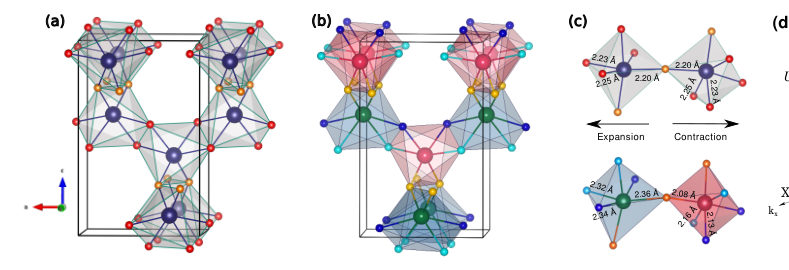
<figcaption class="paper-figure-caption"><b>Fig 1.</b> FIG. 1. Crystal structure of (a) the Pnna and (b) the Pnn2 phases. Only the BiO6 octahedral network is shown, where Bi and O atoms are represented by larger and smaller spheres, respectively. (c) Two neighboring BiO6 octahedra with equal volumes in the Pnna phase (top) become inequivalent, forming contracted and expanded octahedra in the Pnn2 phase (bottom). This symmetry-lowering transition also leads to the emergence of more inequivalent oxygen sites in the Pnn2 phase. (d) Irreducible part of the orthorhombic Brillouin zone for space group Pnn2 (34) along with high symmetric k-points. The solid red lines correspond to the high-symmetric k-path along which the band structures have been...</figcaption>
</figure>
<figure class="paper-figure-card">
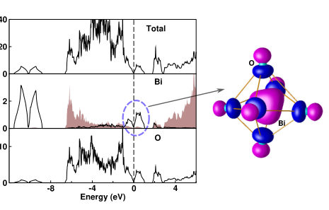
<figcaption class="paper-figure-caption"><b>Fig 2.</b> FIG. 2. Pnna phase: Total and partial densities of states (DOS) of Bi-s, Bi-p (filled curve), and O-p states. The Fermi level is set to zero. The inset shows the Bi-s Wannier func- tion corresponding to the states near the Fermi level, plotted within the BiO6 octahedron.</figcaption>
</figure>
<figure class="paper-figure-card">
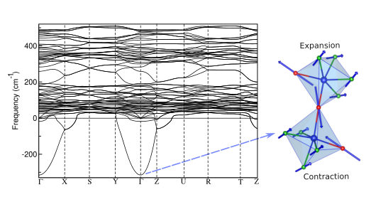
<figcaption class="paper-figure-caption"><b>Fig 3.</b> FIG. 3. Phonon dispersion of the Pnna phase. Inset shows the eigenvectors corresponding to the soft mode at 315i cm−1</figcaption>
</figure>
<figure class="paper-figure-card">
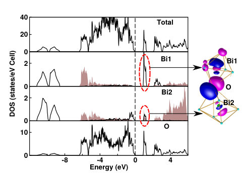
<figcaption class="paper-figure-caption"><b>Fig 4.</b> FIG. 4. Total and partial DOS of Bi1-s, Bi1-p, Bi2-s, Bi2-p and O-p for the Pnn2 phase. The filled curves corresponds to Bi-p. The Fermi level is set at zero. Inset is the plot of O-p Wannier function.</figcaption>
</figure>
<figure class="paper-figure-card">
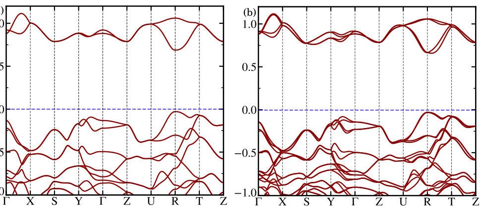
<figcaption class="paper-figure-caption"><b>Fig 5.</b> FIG. 5. Band structure of Ag2BiO3 calculated (a) without spin–orbit coupling and (b) with spin–orbit coupling in the vicinity of the Fermi energy.</figcaption>
</figure>
</div>
<p><strong>Summary.</strong> This theoretical study analyzes the structural and electronic transition of Ag2BiO3 from a metallic to a bond disproportionated insulating state. The work establishes that ligand holes are crucial in stabilizing this insulator, and further predicts the existence of persistent spin textures at high-symmetry points due to non-symmorphic symmetry, positioning the material for spintronic applications.</p>
<p><strong>Why it may be interesting.</strong> The prediction of robust, momentum-dependent spin textures in an insulating oxide material makes this system highly relevant for developing next-generation spintronic devices that rely on intrinsic magnetic order.</p>
<details>
<summary>Detailed structure</summary>
<p><strong>Main problem.</strong> The study investigates the origin of a proposed bond disproportionated insulating state in Ag2BiO3 and characterizes its electronic structure, particularly focusing on spin textures.</p>
<p><strong>Main result.</strong> The system transitions from an unstable metallic phase to a stable, bond disproportionated insulator driven by ligand holes. Furthermore, non-symmorphic symmetry predicts persistent spin textures at high-symmetry points X and Y.</p>
<p><strong>Method.</strong> The research employs first principles electronic structure calculations (DFT) complemented by phonon analysis, k.p model Hamiltonian fitting, and Wannier function analysis.</p>
<p><strong>Model / system.</strong> The physical system is the compound Ag2BiO3, analyzed in both centrosymmetric (Pnna) and non-centrosymmetric (Pnn2) crystal phases. The electronic structure is modeled using DFT calculations incorporating spin-orbit coupling.</p>
<p><strong>Key observables.</strong> Band gap energy (0.69 eV), charge state disproportionation ($  ext{Bi}^{3+}<em ext_L="ext{L">{  ext{L}\delta} +     ext{Bi}^{3+}</em>$), persistent spin textures, and phonon instabilities.}2-\delta</p>
<p><strong>Important parameters / regimes.</strong> The analysis is sensitive to the symmetry lowering transition from Pnna to Pnn2, which dictates the insulating state and spin texture formation.</p>
<p><strong>Assumptions / limitations.</strong> The initial assumption of a simple $4+$ Bi charge state was contradicted by calculations, necessitating the inclusion of ligand hole physics to explain the observed insulating behavior.</p>
<p><strong>Figures summary.</strong> Figures illustrate crystal structures comparing Pnna and Pnn2 phases, Brillouin zone paths for spin texture analysis (X and Y points), and band structure plots derived from k.p models.</p>
<p><strong>Paper structure.</strong> The paper first establishes the structural instability of the metallic phase, leading to the insulating Pnn2 state via symmetry breaking. It then uses DOS calculations to confirm ligand hole formation and charge disproportionation. Finally, it applies a k.p model Hamiltonian analysis to predict and characterize persistent spin textures arising from non-symmorphic symmetry.</p>
</details>
<details>
<summary>Abstract</summary>
<p>The origin of the proposed bond disproportionated insulating state of the non-centrosymmetric ($Pnn2$) phase of Ag$_{2}$BiO$_{3}$ is explored using first principles electronic structure calculations. The novel insulating state is elucidated by first considering the initially proposed centosymmetric metallic ($Pnna$) phase of Ag$_{2}$BiO$_{3}$. Our calculations reveal that the valence skipping Bi$^{4+}$ ions in this phase are better described as Bi$^{3+}\underline{L}$ with completely filled Bi-(6$s$) states and a ligand hole. However, phonon calculations indicate that the metallic ($Pnna$) state is dynamically unstable. Structural stability is achieved through breathing distortions of the oxygen octahedra, resulting in two inequivalent Bi sites and a reduction of symmetry to the $Pnn2$ phase. Electronic structure calculations further reveal that the $Pnn2$ phase is a bond disproportionated insulator where the nominal charge state of Bi is described by : 2[Bi$^{3+}\underline{L}$ (Bi$^{4+}$)] $\rightarrow$ Bi$^{3+}\underline{L}^{2-δ}$ (Bi1$^{5+}$) + Bi$^{3+}\underline{L}^δ$ (Bi2$^{3+}$), highlighting the crucial role of ligand holes in driving the insulating state. Next we have investigated the electronic structure of Ag$_{2}$BiO$_{3}$ in the insulating ($Pnn2$) phase including spin-orbit coupling. Our density functional theory (DFT ) calculations complemented by ${\bf k.p}$ model Hamiltonian analysis reveal persistent spin-textures around the $X$ and $Y$ high symmetry points of the orthorhombic Brillouin zone imposed by non-symmorphic symmetry, positioning Ag$_{2}$BiO$_{3}$ as a promising candidate for spintronic applications.</p>
</details>
<p><sub><a href="#top">↑ back to top</a></sub></p>

<p><a id="paper-2608.16857"></a></p>
<h3 id="fault-tolerant-quantum-computation-with-adversarial-errors"><a href="http://arxiv.org/abs/2608.16857v1">Fault-Tolerant Quantum Computation with Adversarial Errors</a></h3>
<p><strong>Authors:</strong> Nikolas P. Breuckmann, Louis Golowich, Umesh Vazirani<br>
<strong>Type:</strong> theory · <strong>Category:</strong> quantum information and computing · <strong>PDF:</strong> <a href="https://arxiv.org/pdf/2608.16857v1">https://arxiv.org/pdf/2608.16857v1</a><br>
<strong>Analysis basis:</strong> full PDF text, analyzed in chunks</p>
<div class="figure-strip-hint">↔ Scroll figures horizontally</div>
<div class="paper-figures-scroll">
<figure class="paper-figure-card">
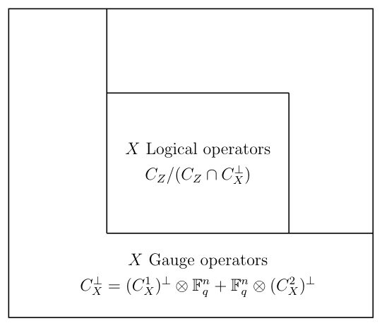
<figcaption class="paper-figure-caption"><b>Fig 1.</b> Figure 1: An illustration of the subsystem product C = C1 ⊗C2 of u = 2 codes C1 = (C1 X, C1 Z) and C2 = (C2 X, C2 Z). Recall that CX = C1 X ⊗C2 X and CZ = C1 Z ⊗C2 Z. The entire square in the figure represents an n×n grid of basis elements of Fn×n q , so that each axis contains n basis elements of Fn q . The space C⊥ X ⊆Fn×n q represents X parity-checks, i.e. gauge operators. Meanwhile, CZ/(CZ ∩C⊥ X) represents the space of X logical operators.</figcaption>
</figure>
</div>
<p><strong>Summary.</strong> This paper presents a significant advancement in fault-tolerant quantum computation by proving resilience against adversarial errors that corrupt large fractions of qubits simultaneously. It achieves this using newly developed subsystem product codes and complex error correction procedures. The result directly addresses major bottlenecks, making the construction of practical, large-scale quantum computers more theoretically feasible.</p>
<p><strong>Why it may be interesting.</strong> This work provides rigorous theoretical guarantees for quantum computation robustness under the most challenging noise models (global, worst-case, non-Markovian), which is crucial for scaling up any physical implementation.</p>
<details>
<summary>Detailed structure</summary>
<p><strong>Main problem.</strong> The primary goal is proving fault-tolerance for quantum computation when subjected to strong, adversarial noise models.</p>
<p><strong>Main result.</strong> The authors establish a fault-tolerance theorem showing that computation remains possible against adversaries corrupting an almost-linear fraction of physical qudits at each time step.</p>
<p><strong>Method.</strong> The construction utilizes novel subsystem product codes and employs a Floquet-like procedure combined with recursive code switching in a hypercubic architecture for error correction.</p>
<p><strong>Model / system.</strong> The model involves quantum circuits operating on logical qudits, which are mapped onto physical qudits encoded within advanced quantum error-correcting codes (specifically subsystem product codes).</p>
<p><strong>Key observables.</strong> Fault tolerance against adversarial noise; the soundness gap $\delta$ for Quantum PCP constructions.</p>
<p><strong>Important parameters / regimes.</strong> The required number of physical qudits $N = 	ext{poly}(ar{N})$ and depth scaling $ar{T} \cdot 2^{O(\sqrt{\log ar{N}})}$.</p>
<p><strong>Assumptions / limitations.</strong> The proof assumes the existence of a fixed universal gate set (Paulis, Hadamard, CNOT, Toffoli) and relies on noiseless classical computation for decoding.</p>
<p><strong>Figures summary.</strong> Not specified in the notes; the structure revolves around theorems proving code constructions and gadget fault-tolerance.</p>
<p><strong>Paper structure.</strong> The paper develops theory by first constructing explicit families of codes using homological products (Chunk 4), then applying these codes to build a universal, fault-tolerant scheme via subsystem product codes and recursive composition (Chunk 1 &amp; 2). Finally, it confirms the fault-tolerance of specific computational gadgets (Chunk 3).</p>
</details>
<details>
<summary>Abstract</summary>
<p>We prove a fault-tolerance theorem for quantum computation against adversarial noise. For every quantum circuit on $\bar{N}$ logical qudits of depth $\bar{T}$, we construct a fault-tolerant circuit on $N=\text{poly}(\bar{N})$ physical qudits of depth $\bar{T}\cdot\bar{N}^{o(1)}$, which is robust against an adversary who may arbitrarily choose and corrupt an almost-linear number $N^{1-o(1)}$ of physical qudits at each time step. This robustness significantly improves upon prior fault-tolerance theorems, which assumed corruptions were either local and stochastic, or else only act on a polynomially vanishing fraction of qudits.   Our fault-tolerance scheme addresses a key bottleneck towards constructing quantum PCPs via the circuit-to-Hamiltonian mapping of Anshu, Breuckmann, and Nguyen (STOC'24). More fundamentally, our result demonstrates that fault-tolerant quantum computation remains possible under noise models that are global, worst-case, and non-Markovian over the full duration of the computation, directly countering concerns that correlated noise could fundamentally undermine quantum fault tolerance.   Our construction is based on a new family of subsystem product codes we develop, which have large dimension and distance along with low-weight parity-checks, and which support transversal non-Clifford gates. We show how to perform single-shot fault-tolerant error correction on these codes using a Floquet-like procedure based on the local testability of classical tensor codes. We then obtain a universal fault-tolerance scheme using repeated code switching in a hypercubic qudit architecture. Finally, we recursively compose our scheme with itself to reduce an initially exponential qudit dimension down to a constant.</p>
</details>
<p><sub><a href="#top">↑ back to top</a></sub></p>

<p><a id="paper-2608.14920"></a></p>
<h3 id="low-temperature-magnetic-structure-and-lattice-response-in-smcuasmath1417math"><a href="http://arxiv.org/abs/2608.14920v1">Low temperature magnetic structure and lattice response in SmCuAs$_2$</a></h3>
<p><strong>Authors:</strong> M. G. Kim, C. Neupane, Y. Yu, R. Acevedo-Esteves, C. Nelson, D. Evans, E. D. Mun, D. F. Agterberg, J. -W. Kim<br>
<strong>Type:</strong> experiment · <strong>Category:</strong> strongly correlated electrons · <strong>PDF:</strong> <a href="https://arxiv.org/pdf/2608.14920v1">https://arxiv.org/pdf/2608.14920v1</a><br>
<strong>Analysis basis:</strong> full PDF text, analyzed in chunks</p>
<div class="figure-strip-hint">↔ Scroll figures horizontally</div>
<div class="paper-figures-scroll">
<figure class="paper-figure-card">
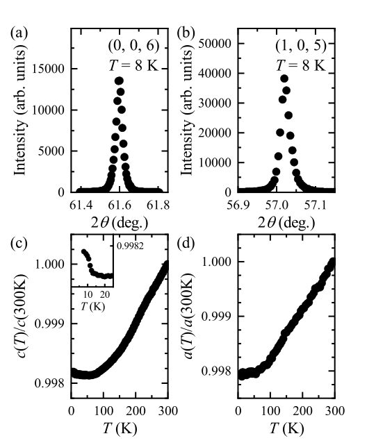
<figcaption class="paper-figure-caption"><b>Fig 1.</b> FIG. 1. (a) Longitudinal scans (θ −2θ scans) of the (0, 0, 6) Bragg peak measured at 8 K. (b) Rocking scan at the (1, 0, 5) at T = 8 K. (c) Lattice parameter c extracted from (0, 0, 6) Bragg peak as a function of temperature. The inset shows an expanded view of the data below 25 K. (d) Lattice parameter a calculated from the (1, 0, 5) Bragg peak as a function of temperature.</figcaption>
</figure>
<figure class="paper-figure-card">
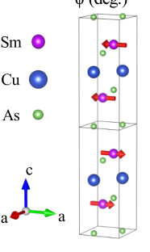
<figcaption class="paper-figure-caption"><b>Fig 2.</b> FIG. 3. (a) Fluorescence (open symbols) and energy scan (closed symbols) measured at the Sm L2 edge. The energy scan was per- formed at the AFM (0, 0, 5.5) Bragg peak in the σ −π channel. (b) Azimuthal dependence of the intensity ratio between the AFM (0, 0, 5.5) Bragg peak and the structural (0, 0, 6) peak. (c) L-dependence of the AFM (0, 0, L) Bragg peaks. Squares represent experimental data, open circles show calculated intensities for m ⊥c (Γ10), and trian- gles represent calculated intensities for m ∥c (Γ3). (d) Schematic illustration of the AFM structure of SmCuAs2.</figcaption>
</figure>
</div>
<p><strong>Summary.</strong> This paper experimentally characterizes the structure and magnetism of SmCuAs2 using synchrotron X-ray techniques. It reveals an antiferromagnetic state with moments confined to the ab-plane, while anomalous lattice parameter changes near magnetic transitions confirm significant magnetoelastic coupling. The findings highlight how moment orientation and magnetic frustration govern low-temperature transport properties in this class of materials.</p>
<p><strong>Why it may be interesting.</strong> This work provides experimental evidence linking structural anomalies (lattice parameter changes) directly to magnetic ordering phenomena via magnetoelastic coupling, which is a key area of study in strongly correlated materials physics.</p>
<details>
<summary>Detailed structure</summary>
<p><strong>Main problem.</strong> The study investigates the structural and magnetic properties of SmCuAs2, focusing on the interplay between lattice response, magnetism, and a resistivity minimum observed at low temperatures.</p>
<p><strong>Main result.</strong> The compound exhibits an in-plane antiferromagnetic structure with a specific stacking pattern along the c-axis, and anomalous lattice parameter behavior suggests strong magnetoelastic coupling near magnetic transitions.</p>
<p><strong>Method.</strong> The research employed high-resolution synchrotron X-ray diffraction (XRD) for structural measurements and X-ray Resonant Magnetic Scattering (XRMS) to determine the precise magnetic ordering vector and moment orientation.</p>
<p><strong>Model / system.</strong> The physical system is single-crystalline SmCuAs2, which belongs to a family of RECuAs2 compounds known for complex low-temperature electronic behavior, including resistivity minima preceding antiferromagnetic ordering.</p>
<p><strong>Key observables.</strong> Lattice parameters (a and c), magnetic Bragg peak positions ($\mathbf{q} = (0, 0, 0.5)$), and temperature dependence of these observables relative to the resistivity minimum ($T \approx 30$ K) and Néel temperature ($T_N$).</p>
<p><strong>Important parameters / regimes.</strong> Temperature range down to 8 K; magnetic propagation vector $\mathbf{q} = (0, 0, 0.5)$; comparison across the RECuAs2 series.</p>
<p><strong>Assumptions / limitations.</strong> The anomalous lattice behavior is attributed to magnetoelastic coupling, and the observed magnetic structure is dictated by in-plane moment alignment ($\mathbf{m} \perp c$).</p>
<p><strong>Figures summary.</strong> Figure 1 shows XRD results detailing the plateau/increase in the c-lattice parameter near the resistivity minimum. Figure 2 presents XRMS data confirming the commensurate AFM order and determining the moment orientation via energy scans.</p>
<p><strong>Paper structure.</strong> The paper systematically uses temperature-dependent XRD to map lattice changes, followed by detailed XRMS analysis to pinpoint the magnetic structure ($\mathbf{q}$ vector and moment direction), culminating in a comparison with related compounds to establish the role of magnetoelastic coupling.</p>
</details>
<details>
<summary>Abstract</summary>
<p>We investigated the structural and magnetic properties of single-crystalline SmCuAs$_2$ using high-resolution synchrotron X-ray diffraction and X-ray resonant magnetic scattering (XRMS) at the Sm $L_2$ and $L_3$ edges. Temperature-dependent diffraction measurements confirm that SmCuAs$_2$ maintains its tetragonal symmetry from room temperature down to 8 K, with lattice parameters showing anomalous behavior below the resistivity minimum ($T \approx$ 30 K). Notably, the \textbf{c}-axis lattice parameter exhibits a plateau and subsequent increase near the Néel temperature, indicating magnetoelastic coupling. XRMS measurements reveal a commensurate antiferromagnetic structure with a propagation vector \textbf{\textit{q}} = (0, 0, 0.5). Our measurement shows that the Sm moments are aligned within the \textbf{\textit{ab}} plane and arranged in a $++--$ stacking along the \textbf{\textit{c}}-axis. Comparison with related \textit{RE}CuAs$_2$ compounds (\textit{RE} = Pr, Nd, and Gd) suggests that in-plane moment orientation and associated magnetic frustration play a key role in the emergence of the resistivity minimum. Differences in spin-orbit and magnetoelastic coupling across the series highlight their importance in governing low-temperature transport behavior.</p>
</details>
<p><sub><a href="#top">↑ back to top</a></sub></p>

<p><a id="paper-2608.14872"></a></p>
<h3 id="minimality-of-the-pure-qubit-zx-calculus"><a href="http://arxiv.org/abs/2608.14872v1">Minimality of the Pure Qubit ZX Calculus</a></h3>
<p><strong>Authors:</strong> Harry K. Stoltz, Renaud Vilmart<br>
<strong>Type:</strong> theory · <strong>Category:</strong> quantum information and computing · <strong>PDF:</strong> <a href="https://arxiv.org/pdf/2608.14872v1">https://arxiv.org/pdf/2608.14872v1</a><br>
<strong>Analysis basis:</strong> full PDF text, analyzed in chunks</p>
<div class="figure-strip-hint">↔ Scroll figures horizontally</div>
<div class="paper-figures-scroll">
<figure class="paper-figure-card">
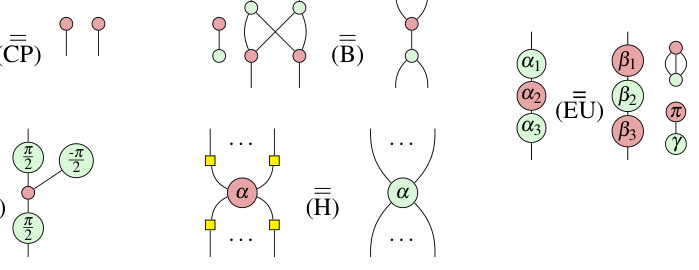
<figcaption class="paper-figure-caption"><b>Fig 1.</b> Figure 2. Set of rules ZXopt for the ZX calculus with scalars. The above labels and rewrites are lightly adapted from Vilmart [13]. The right-hand side of (E) is an empty diagram. (...) denote zero or more wires, while (</figcaption>
</figure>
<figure class="paper-figure-card">
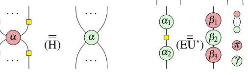
<figcaption class="paper-figure-caption"><b>Fig 2.</b> Figure 3. Set of rules ZX′ opt for the ZX calculus with scalars. The above labels and rewrites are lightly adapted from Vilmart [13]. The right-hand side of (IV) is an empty diagram. (...) denote zero or more wires, while (</figcaption>
</figure>
</div>
<p><strong>Summary.</strong> This paper rigorously determines the minimal and complete set of axioms—the ruleset—required to define the Pure Qubit ZX Calculus. By employing advanced algebraic interpretations, the authors prove that specific structural identities, such as the bialgebra law (B) and the Green Identity $(	ext{Ig})$, are necessary components for the calculus to be sound and complete.</p>
<p><strong>Why it may be interesting.</strong> This work provides a rigorous mathematical foundation for quantum circuit representation by establishing the most compact axiomatic description (minimal ruleset) required to describe all pure qubit computations using the ZX calculus formalism.</p>
<details>
<summary>Detailed structure</summary>
<p><strong>Main problem.</strong> The primary goal is to develop and prove the minimality of a pure-qubit ZX calculus, resolving an open problem regarding its complete set of defining rules.</p>
<p><strong>Main result.</strong> The authors establish two distinct but equivalent minimal and complete rulesets ($ ext{ZXopt}$ and $   ext{ZX}'_{  ext{opt}}$) for describing pure qubit quantum processes using the graphical ZX calculus.</p>
<p><strong>Method.</strong> The work employs advanced algebraic techniques, including constructing specific linear interpretations (functors $J_{-K}$) of abstract structural rules to test their necessity by finding counter-models or proving derivability.</p>
<p><strong>Model / system.</strong> The model is pure qubit quantum processes, which are represented and manipulated using the ZX calculus—a graphical language for quantum computation circuits. The analysis involves constructing perturbed Hadamard matrices ($H'$) to simplify structural checks.</p>
<p><strong>Key observables.</strong> The necessity of specific rules like (B) (bialgebra law), $(	ext{Ig})$ (Green Identity), and $(Ir)$ are the key diagnostics, tested by checking if they hold under various interpretations.</p>
<p><strong>Important parameters / regimes.</strong> The analysis tracks phases ($\pi/4$, $-\pi/2$) and scalar coefficients associated with quantum gates and structural identities.</p>
<p><strong>Assumptions / limitations.</strong> The proofs rely on defining appropriate linear interpretations ($J_{-K}$) for abstract rules to test their necessity, and the derivations assume specific connectivity meta-rules hold.</p>
<p><strong>Figures summary.</strong> Figure 1 defines the generators of the full pure-qubit ZX calculus (e.g., Green/Red Spiders, Hadamard). Figure 2 illustrates the proposed minimal rule set $   ext{ZXopt}$ for the calculus with scalars.</p>
<p><strong>Paper structure.</strong> The paper progresses by first defining the necessary structural rules and then systematically proving the necessity of each rule—such as $(	ext{B})$ and $(	ext{Ig})$—using specialized interpretations. Finally, it derives that other relations, like $(Ir)$, are derivable within the minimal set.</p>
</details>
<details>
<summary>Abstract</summary>
<p>The ZX calculus is a graphical language for reasoning about quantum processes. In this paper, we develop a minimal pure-qubit ZX calculus based on the work of Vilmart [arXiv:1812.09114], Backens, Perdrix, and Wang [arXiv:1709.08903], and Stoltz [arXiv:2606.12383]. This resolves a problem that has remained open for nearly a decade, since completeness was first proved. Specifically, we show that $(I_r)$ is derivable and establish the necessity of $(B)$ and $(I_g)$, yielding two complete and minimal rulesets.</p>
</details>
<p><sub><a href="#top">↑ back to top</a></sub></p>

<p><a id="paper-2608.16439"></a></p>
<h3 id="optimal-bounds-on-the-classical-value-of-the-repeated-chsh-game"><a href="http://arxiv.org/abs/2608.16439v1">Optimal bounds on the classical value of the repeated CHSH game</a></h3>
<p><strong>Authors:</strong> Andris Ambainis<br>
<strong>Type:</strong> theory · <strong>Category:</strong> quantum information and computing · <strong>PDF:</strong> <a href="https://arxiv.org/pdf/2608.16439v1">https://arxiv.org/pdf/2608.16439v1</a><br>
<strong>Analysis basis:</strong> full PDF text, analyzed in chunks</p>
<div class="figure-strip-hint">↔ Scroll figures horizontally</div>
<div class="paper-figures-scroll">
<figure class="paper-figure-card">
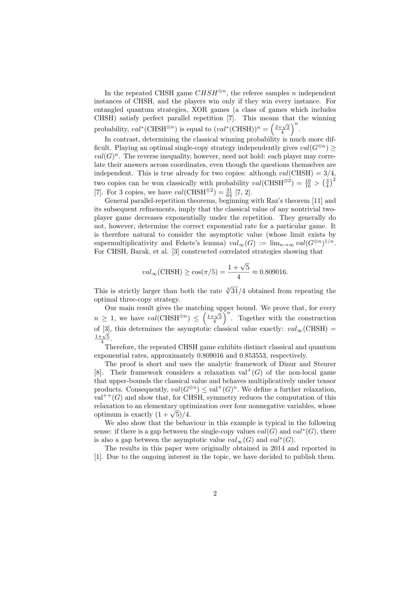
<figcaption class="paper-figure-caption"><b>Fig 1.</b> Low-resolution page preview, page 2</figcaption>
</figure>
<figure class="paper-figure-card">
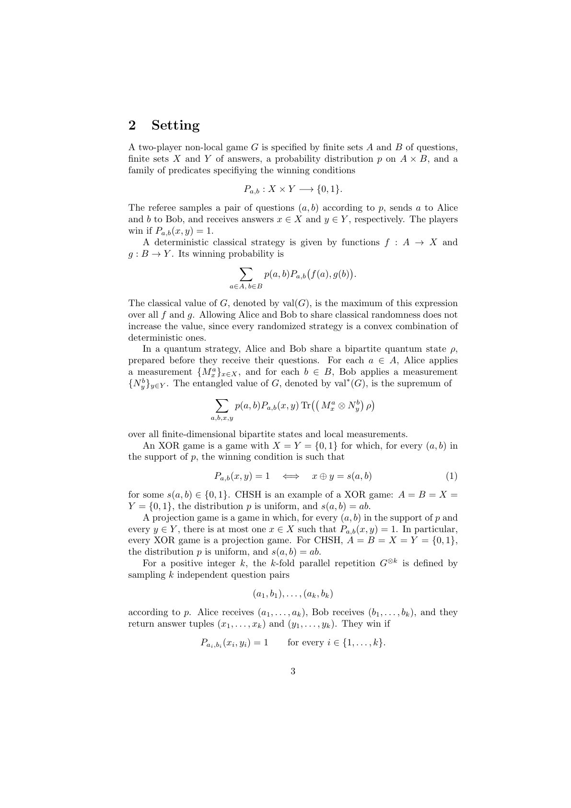
<figcaption class="paper-figure-caption"><b>Fig 2.</b> Low-resolution page preview, page 3</figcaption>
</figure>
<figure class="paper-figure-card">
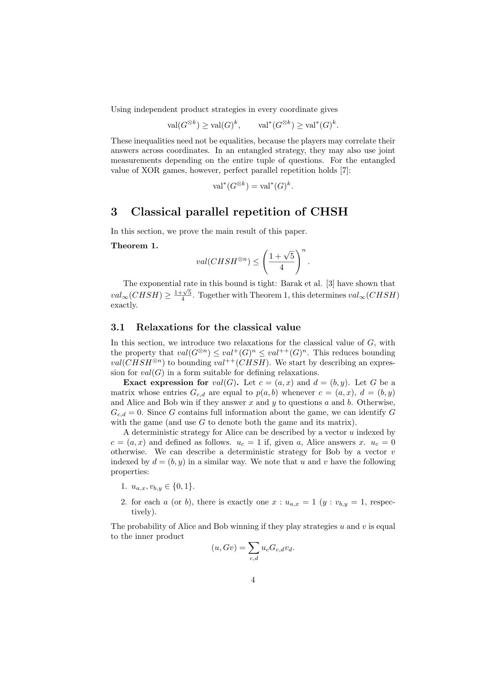
<figcaption class="paper-figure-caption"><b>Fig 3.</b> Low-resolution page preview, page 4</figcaption>
</figure>
<figure class="paper-figure-card">
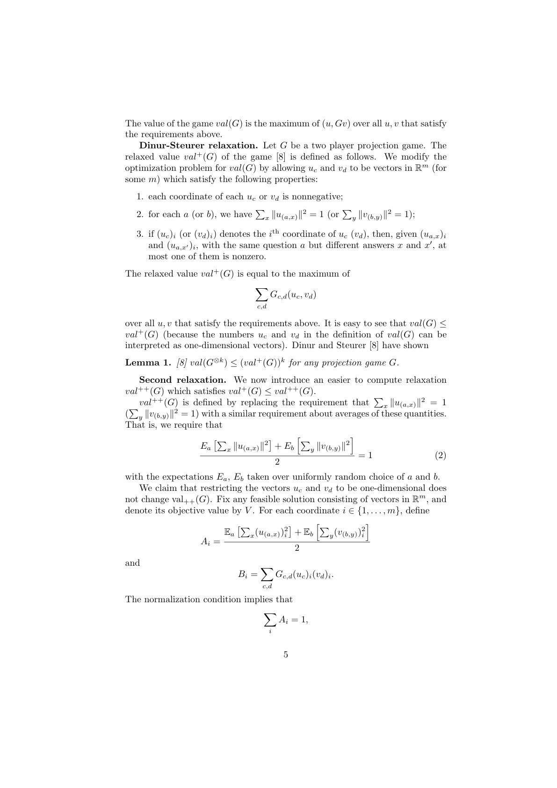
<figcaption class="paper-figure-caption"><b>Fig 4.</b> Low-resolution page preview, page 5</figcaption>
</figure>
<figure class="paper-figure-card">
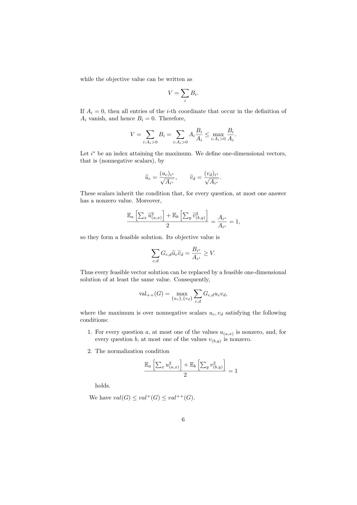
<figcaption class="paper-figure-caption"><b>Fig 5.</b> Low-resolution page preview, page 6</figcaption>
</figure>
</div>
<p><strong>Summary.</strong> This paper rigorously determines the exact asymptotic rate for the repeated CHSH game, showing it is $1 + rac{\sqrt{5}}{4}$. By analyzing relaxations on the optimization problem, the authors prove that a gap exists between the classical and quantum bounds even in the limit of many repetitions. This confirms the non-local nature of quantum correlations.</p>
<p><strong>Why it may be interesting.</strong> This work provides a concrete example of quantifying the gap between local hidden variable theories (classical) and quantum mechanics in the context of information theory games, which is fundamental to understanding quantum advantage.</p>
<details>
<summary>Detailed structure</summary>
<p><strong>Main problem.</strong> The paper aims to determine the exact asymptotic classical value of the repeated CHSH game, $ ext{val}_\infty(    ext{CHSH})$, by establishing tight upper bounds.</p>
<p><strong>Main result.</strong> It determines that the asymptotic classical rate for the repeated CHSH game is exactly $1 + rac{\sqrt{5}}{4}$, demonstrating a gap between classical and quantum exponential rates.</p>
<p><strong>Method.</strong> The authors use relaxation techniques ($    ext{val}^+$) applied to the optimization problem defining the winning probability of the repeated game, reducing it to an elementary optimization solvable via calculus.</p>
<p><strong>Model / system.</strong> The analysis focuses on the CHSH non-local game, which is modeled as an XOR game. The results are generalized to show that gaps persist between classical and quantum bounds for any such game.</p>
<p><strong>Key observables.</strong> Maximum winning probability ($ ext{val}(G)$), asymptotic classical rate ($ ext{val}_\infty(G)$), and the entangled value ($  ext{val}^*(G)$).</p>
<p><strong>Important parameters / regimes.</strong> The exponent $n$ (number of repetitions) is crucial for defining the asymptotic limit.</p>
<p><strong>Assumptions / limitations.</strong> The analysis relies on showing that certain relaxations, like $  ext{val}^{++}(G)$, are sufficient because they can be reduced to one-dimensional solutions without loss of value.</p>
<p><strong>Paper structure.</strong> The paper proceeds by defining the problem for repeated games, deriving upper bounds using relaxation techniques ($    ext{val}^+$), solving these bounds specifically for CHSH, and concluding with general theorems about the existence of gaps between classical and quantum rates.</p>
</details>
<details>
<summary>Abstract</summary>
<p>We show that the maximum winning probability in the repeated CHSH game for classical strategies is at most $\left(\frac{1+\sqrt{5}}{4}\right)^n$. Together with a matching lower bound by Barak et al. (FOCS'2008), this determines the asymptotic value of the repeated CHSH game exactly. We also show that, if an XOR game has a gap between classical and quantum values, there is also a gap between the asymptotic values for the repeated game.</p>
</details>
<p><sub><a href="#top">↑ back to top</a></sub></p>

<p><a id="paper-2608.15655"></a></p>
<h3 id="rand-semi-qaoa-finite-budget-depth-one-maxcut-ensembles-on-compressed-quantum-registers"><a href="http://arxiv.org/abs/2608.15655v1">Rand-SEMI-QAOA: Finite-Budget Depth-One MaxCut Ensembles on Compressed Quantum Registers</a></h3>
<p><strong>Authors:</strong> Emilio Semre, Steven Frankel<br>
<strong>Type:</strong> theory · <strong>Category:</strong> quantum information and computing · <strong>PDF:</strong> <a href="https://arxiv.org/pdf/2608.15655v1">https://arxiv.org/pdf/2608.15655v1</a><br>
<strong>Analysis basis:</strong> full PDF text, analyzed in chunks</p>
<div class="figure-strip-hint">↔ Scroll figures horizontally</div>
<div class="paper-figures-scroll">
<figure class="paper-figure-card">
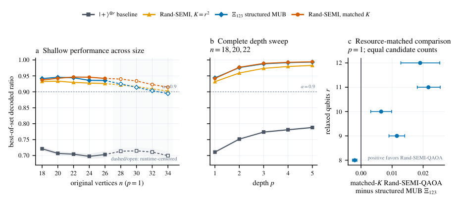
<figcaption class="paper-figure-caption"><b>Fig 1.</b> Figure 1: Shallow decoded MaxCut performance under an explicit candidate budget. The legend compares the r2-budget and matched-budget Rand-SEMI-QAOA schedules with the structured MUB selector Ξ123 and the single-state baseline. a, depth-one best-of-set ratio versus original graph size. Solid lines and filled markers denote the complete or compositionally reliable portion through n = 26; dashed lines, open markers, and light shading mark the runtime-censored n ≥28 analysis freeze. b, depth sweep on the complete n = 18, 20, 22 cohorts (2,400 graphs per point). c, graph-paired matched-K Rand-SEMI-QAOA minus the structured MUB selector Ξ123 at p = 1 where candidate counts are exactly matched (r...</figcaption>
</figure>
<figure class="paper-figure-card">

<figcaption class="paper-figure-caption"><b>Fig 2.</b> Figure 2: Exhaustive MaxCut family discovery in the 20 validated full-campaign aggregations. a, product-family and selected strongest-nonproduct graph-mean decoded ratios, with the nonproduct basis labeled directly. b, paired product-minus-nonproduct margin with graph-bootstrap 95% intervals (10,000 resamples) and a zero reference. Every row enumerates all noncomputational families and all 2r</figcaption>
</figure>
<figure class="paper-figure-card">
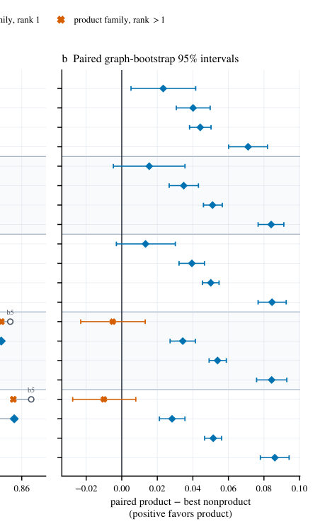
<figcaption class="paper-figure-caption"><b>Fig 3.</b> Figure 3b controls candidate count without Monte Carlo sampling. At K = 1 the curves reproduce the raw and optimized means. At K = 64, the expected maximum is 0.602 raw and 0.923 post-p = 1. More candidates help both, but the raw ensemble remains far below the optimized one. Thus the &gt; 0.9 best- of-K regime is not obtained merely by decoding 64 classically lucky product labels. This control establishes a within-product dynamical lift; because it does not repeat the raw/post experiment for every entangled family, it does not by itself explain the between-family ordering in Fig. 2.</figcaption>
</figure>
<figure class="paper-figure-card">
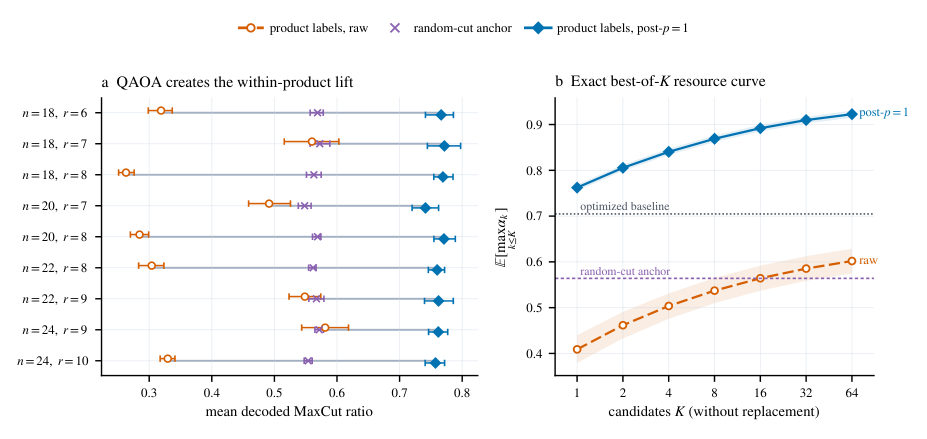
<figcaption class="paper-figure-caption"><b>Fig 4.</b> Figure 3: No-QAOA and candidate-count controls. a, cell-level mean decoded ratios for raw product labels, the random-cut anchor, and the same labels after depth-one optimization. Labels give n/r; every cell contains eight graphs. b, exact expected best decoded ratio from K product labels sampled uniformly without replacement. Equation (20) is evaluated within each graph before graph averaging; ribbons are 95% graph-bootstrap intervals. Horizontal references show the random-cut anchor and optimized |+⟩⊗r</figcaption>
</figure>
<figure class="paper-figure-card">
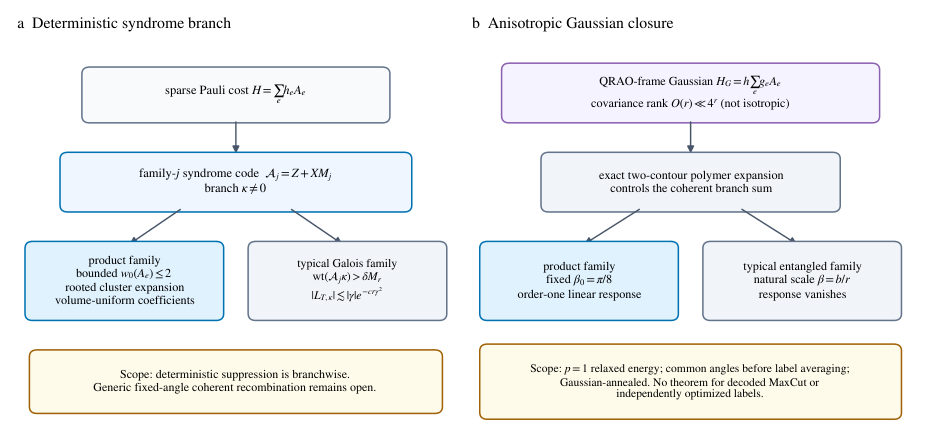
<figcaption class="paper-figure-caption"><b>Fig 5.</b> Figure 4: One-layer relaxed-energy mechanism. a, in the deterministic expansion a typical entangled- family branch induces an extensive edge-sign quench and its individual rooted overlap dephases; product- family terms admit a rooted connected-cluster expansion with volume-uniform factorial-weighted bounds. Coherent recombination of all deterministic branches at generic fixed mixer angle is open. b, the anisotropic Gaussian QRAO surrogate closes that sum on the entangled scale β = b/r, while the product family retains a nonzero linear response at β0 = π/8. The comparison is annealed, common-angle, label-averaged, p = 1, and concerns relaxed energy rather than independently optimized decoded...</figcaption>
</figure>
</div>
<p><strong>Summary.</strong> This paper introduces Rand-SEMI-QAOA, a constrained QAOA ensemble designed to solve the MaxCut problem using limited computational resources. By sampling candidate states from specific quantum basis families and employing best-of-set decoding, it achieves high approximation ratios on test graphs. The work is significant for benchmarking near-term quantum optimization algorithms but cautions that these results do not prove quantum advantage.</p>
<p><strong>Why it may be interesting.</strong> It provides concrete, resource-explicit benchmarks for near-term quantum optimization algorithms applied to classical NP-hard problems like MaxCut, which is highly relevant for assessing NISQ device capabilities.</p>
<details>
<summary>Detailed structure</summary>
<p><strong>Main problem.</strong> The paper addresses optimizing combinatorial problems, specifically MaxCut, using quantum approximate optimization algorithms (QAOA) under severe computational resource constraints.</p>
<p><strong>Main result.</strong> A specific QAOA ensemble, Rand-SEMI-QAOA, achieved a high graph-mean approximation ratio of 0.9421 for random 3-regular MaxCut instances with only one QAOA layer.</p>
<p><strong>Method.</strong> The method involves constructing and sampling candidate state-mixer pairs from a product-X family derived from Galois stabilizer MUBs, optimizing each pair independently, and selecting the best result (best-of-set decoding).</p>
<p><strong>Model / system.</strong> The model is QAOA applied to MaxCut, utilizing a compressed quantum register approach called QRAO. The optimization relies on sampling states/mixers from a product-X family within an implemented Galois stabilizer MUB system.</p>
<p><strong>Key observables.</strong> Approximation Ratio ($\alpha$), decoded best-of-set approximation ratio (e.g., 0.9421), and the relaxed QRAO energy.</p>
<p><strong>Important parameters / regimes.</strong> Graph size ($n \in \{18, 20, 22\}$), QAOA layer depth (one layer), and the budget/schedule parameter $K$.</p>
<p><strong>Assumptions / limitations.</strong> The results are finite-size and resource-explicit; the paper explicitly states it does not establish quantum advantage or guarantee performance over all possible selector seeds.</p>
<p><strong>Figures summary.</strong> Not specified in detail, but notes mention Table 1 summarizing resource models for various shallow quantum optimization methods.</p>
<p><strong>Paper structure.</strong> The structure moves from defining the MaxCut problem and QAOA framework to introducing the Rand-SEMI-QAOA ensemble based on MUB sampling. It then presents performance results on random graphs and concludes with limitations regarding quantum advantage claims.</p>
</details>
<details>
<summary>Abstract</summary>
<p>We introduce Rand-SEMI-QAOA, a finite-budget QRAO--QAOA ensemble for MaxCut based on a $(3,1)$-QRAC relaxation. The method samples labels uniformly without replacement from the product-$X$ family of an implemented Galois stabilizer mutually unbiased basis (MUB) system. Each selected state--mixer pair is optimized independently for relaxed QRAO energy and then evaluated by deterministic Pauli-sign decoding. Exhaustive scans of the implemented noncomputational MUB catalog place the product-$X$ family first in 18 of 20 validated family-mean cells and in every tested cell for $r=5,6,7$. On a complete cohort of $2{,}400$ random connected 3-regular MaxCut instances with $n\in\{18,20,22\}$, the capped matched-cardinality schedule attains a graph-mean decoded best-of-set approximation ratio of $0.9421$ with one QAOA layer, while the $K=r^2$ schedule attains $0.9319$. These statistics are conditional on the disclosed frozen selector pools and do not estimate variability over selector seeds. An exact gauge identity shows that product-family labels generate the orbit of the QRAO Hamiltonian under an $r$-dimensional sign-gauge group. For common angles and relaxed energy, deterministic syndrome analysis proves branchwise dephasing, while an anisotropic Gaussian surrogate controls the coherent label-averaged response on the scale $β=b/r$. The theory does not order independently optimized decoded maxima. The results are finite-size and resource-explicit and do not establish quantum advantage.</p>
</details>
<p><sub><a href="#top">↑ back to top</a></sub></p>

<p><a id="paper-2608.16847"></a></p>
<h3 id="spectral-edge-rigidity-of-quantum-chaotic-states"><a href="http://arxiv.org/abs/2608.16847v1">Spectral Edge Rigidity of Quantum Chaotic States</a></h3>
<p><strong>Authors:</strong> Joaquim Telles de Miranda, Tobias Micklitz<br>
<strong>Type:</strong> theory · <strong>Category:</strong> disordered systems and neural networks · <strong>PDF:</strong> <a href="https://arxiv.org/pdf/2608.16847v1">https://arxiv.org/pdf/2608.16847v1</a><br>
<strong>Analysis basis:</strong> full PDF text, analyzed in chunks</p>
<div class="figure-strip-hint">↔ Scroll figures horizontally</div>
<div class="paper-figures-scroll">
<figure class="paper-figure-card">
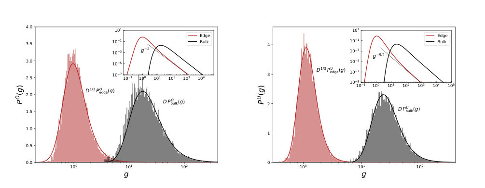
<figcaption class="paper-figure-caption"><b>Fig 1.</b> FIG. 1. Left: GOE fidelity susceptibility distributions for near-edge (red) and bulk (black) states compared with histograms generated from an ensemble of 10,000 matrices of dimension D = 100. (Edge and bulk distributions are scaled by D1/3 and D, respectively, for visibility.) Inset: GOE distributions for near-edge and bulk states, with asymptotic scaling g−2 shown for reference. Right: Corresponding plot for the GUE, with the inset now displaying g−5/2 scaling. As noted in the main text, edge distributions were shifted as PO,U edge(g −g∗), with g∗≈0.50, 0.47 for GOE and GUE, respectively.</figcaption>
</figure>
</div>
<p><strong>Summary.</strong> This theoretical work derives the universal statistics governing fidelity susceptibility at the spectral edge of random matrix ensembles (GOE/GUE). It shows that these edge states exhibit enhanced stability—or 'rigidity'—compared to bulk states. The methodology successfully unifies the description across different symmetries using advanced determinant and integral techniques.</p>
<p><strong>Why it may be interesting.</strong> The concept of 'spectral-edge rigidity' provides a quantitative measure of stability in chaotic quantum systems. This framework is highly relevant for understanding noise resilience or robustness in complex, disordered quantum many-body models.</p>
<details>
<summary>Detailed structure</summary>
<p><strong>Main problem.</strong> The research determines the universal distribution of fidelity susceptibility for chaotic eigenstates located precisely at the spectral edge of Gaussian random-matrix ensembles.</p>
<p><strong>Main result.</strong> Edge states exhibit a characteristic rigidity, leading to a symmetry-dependent cubic suppression of small susceptibilities compared to bulk states. This establishes that low-lying chaotic states are parametrically less sensitive to perturbations than their bulk counterparts.</p>
<p><strong>Method.</strong> The authors extend determinant-based frameworks from the spectral bulk to derive universal edge distributions for both orthogonal and unitary ensembles using Gaussian integrals and matrix identities.</p>
<p><strong>Model / system.</strong> The study analyzes quantum systems whose dynamics are modeled by Hamiltonians drawn from Gaussian Random Matrix Ensembles (GOE, GUE). The focus is on the behavior near the spectral endpoints ($D \gg 1$).</p>
<p><strong>Key observables.</strong> Fidelity susceptibility ($\chi$), which measures state sensitivity to perturbations; the probability distribution of this susceptibility, $  ext{PS}(g)$.</p>
<p><strong>Important parameters / regimes.</strong> The Dyson index $eta$ (determining symmetry: $eta=1$ for GOE, $eta=2$ for GUE); the scaling variable $g/D^{1/3}$ at the edge; and the large-$D$ limit.</p>
<p><strong>Assumptions / limitations.</strong> The analysis relies on extending determinant-based methods to the spectral edge where saddle points coalesce, necessitating a return to integral forms. The results are derived in the thermodynamic limit ($D 	o \infty$).</p>
<p><strong>Figures summary.</strong> Figures compare analytical predictions for $   ext{PO}<em ext_edge="ext{edge">{   ext{edge}}(g)$ and $    ext{PU}</em>(g)$ against numerical histograms for GOE and GUE, confirming agreement across both bulk and edge regimes.}</p>
<p><strong>Paper structure.</strong> The paper builds from analyzing the general framework of fidelity susceptibility in random matrices, deriving the necessary mathematical tools (determinant identities), and finally applying these tools to extract the universal scaling laws specific to the spectral edge regime for different symmetry classes.</p>
</details>
<details>
<summary>Abstract</summary>
<p>We determine the distribution of fidelity susceptibility for chaotic eigenstates at the spectral edge of Gaussian random-matrix ensembles. Previous work showed that, in the unitary class, the characteristic susceptibility scale of edge states grows as $D^{1/3}$, rather than proportionally to $D$ as in the spectral bulk, reflecting Airy-edge level rigidity. Extending a determinant-based framework introduced for bulk states, we derive the universal edge distributions for both the orthogonal and unitary ensembles. The two symmetry classes share the scaling variable $g/D^{1/3}$ and exhibit a symmetry-dependent cubic suppression of small susceptibilities, while their algebraic large-$g$ tails reflect the corresponding symmetry-dependent level repulsion. Although eigenvector statistics retain their random-matrix form throughout the spectrum, edge rigidity makes low-lying chaotic states parametrically less sensitive to generic perturbations than bulk states. Our results establish universal, symmetry-dependent spectral-edge fidelity-susceptibility statistics in systems whose chaotic dynamics extends down to the ground state.</p>
</details>
<p><sub><a href="#top">↑ back to top</a></sub></p>
</details>
<h2 id="secondary-cond-mat-archives">Secondary cond-mat archives</h2>
<p><em>Papers from cond-mat.mtrl-sci, mes-hall, other, soft, supr-con. These archives are de-prioritized — they appear at the end regardless of relevance score.</em></p>
<h3 id="relevant-in-secondary-archives-37">Relevant in secondary archives (37)</h3>

<p><a id="paper-2608.16372"></a></p>
<h3 id="tunable-fano-resonance-and-frequency-locking-in-a-graphene-sinx-hybrid-nanomechanical-resonator"><a href="http://arxiv.org/abs/2608.16372v1">Tunable Fano Resonance and Frequency Locking in a Graphene-SiNx Hybrid Nanomechanical Resonator</a></h3>
<p><strong>Authors:</strong> Ateesh K. Rathi, Javed A. Mondal, Rajan Singh, Ryan J. T. Nicholl, Kirill I. Bolotin, Saikat Ghosh<br>
<strong>Type:</strong> both · <strong>Category:</strong> other · <strong>PDF:</strong> <a href="https://arxiv.org/pdf/2608.16372v1">https://arxiv.org/pdf/2608.16372v1</a><br>
<strong>Analysis basis:</strong> full PDF text, analyzed in chunks
<strong>Topic relevance:</strong> 🔥 <code>interference shaping light</code> <strong>4/5</strong> · <code>driven-dissipative phase transition</code> <strong>3/5</strong> · <code>methods for driven-dissipative</code> <strong>3/5</strong> · <code>analog quantum simulation</code> <strong>2/5</strong> · <code>correlated / nonlocal dissipation</code> <strong>2/5</strong> · <code>non-equilibrium universality</code> <strong>2/5</strong> · <code>quantum measurements</code> <strong>2/5</strong> · <code>Frenkel-Kontorova</code> <strong>1/5</strong> · <code>Keldysh / 2PI / non-Gaussian methods</code> <strong>1/5</strong> · <code>quantum optics experiment</code> <strong>1/5</strong></p>
<div class="figure-strip-hint">↔ Scroll figures horizontally</div>
<div class="paper-figures-scroll">
<figure class="paper-figure-card">
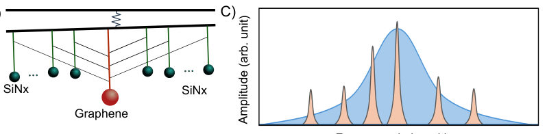
<figcaption class="paper-figure-caption"><b>Fig 1.</b> Figure 1. (A) SEM image of the device, where the grey area corresponds to the silicon nitride membrane, while the black circular region represents a suspended graphene drum with a diameter of 20 µm. (B) Mechanical model of the system: a single damped graphene resonator (red sphere) coupled to multiple high-Q silicon nitride resonators (teal spheres). (C) Schematic of the broad graphene resonance overlapping with a dense comb of sharp, fixed frequency silicon nitride modes.</figcaption>
</figure>
<figure class="paper-figure-card">
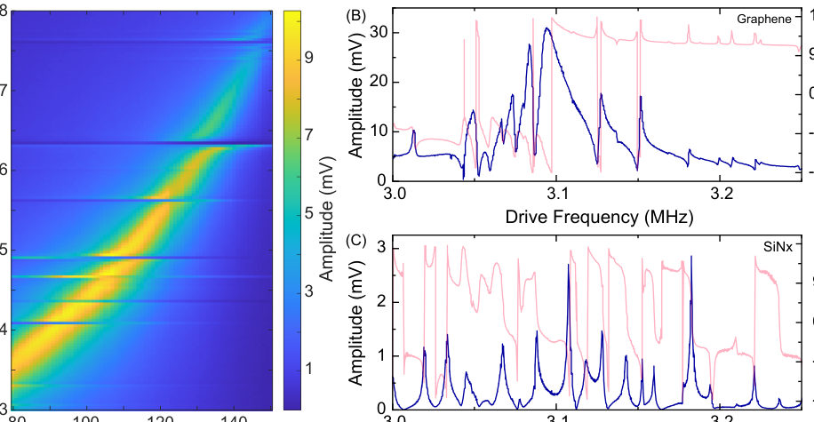
<figcaption class="paper-figure-caption"><b>Fig 2.</b> Figure 2. (A) Dispersion of the graphene resonator resonance frequency as a function of DC gate voltage Vdc. The tunable graphene mode successively interacts with multiple fixedfrequency silicon nitride (SiNx) modes (dark horizontal lines), which remain unaffected by the gate voltage due to the large mass and high built-in tension of SiNx. (B) Representative frequency domain spectrum of the graphene resonator at a fixed gate voltage, showing the broad graphene resonance strongly coupled to multiple discrete, high quality factor silicon nitride modes. (C) Spectrum in the same frequency range, highlighting the dense population of sharp silicon nitride modes available for coupling with the...</figcaption>
</figure>
<figure class="paper-figure-card">
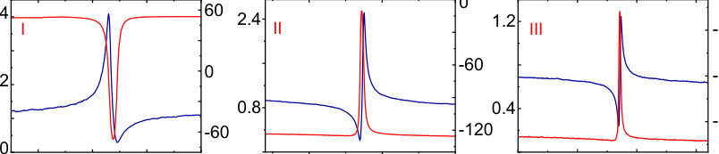
<figcaption class="paper-figure-caption"><b>Fig 3.</b> Figure 3. Fano resonances: (A) Fano resonances with varying asymmetries are observed at different positions of the graphene mode. Four representative line shapes, labeled I–III and highlighted in red rectangles, are shown along with the corresponding phase responses of the graphene–SiNx hybrid modes (right axis). Panels B–D present the amplitude (upper panels) and phase (lower panels) responses for regions I–III. Regions I, exhibit negative Fano parameters, while regions II and III display positive Fano parameters, demonstrating the evolution of resonance asymmetry.</figcaption>
</figure>
<figure class="paper-figure-card">
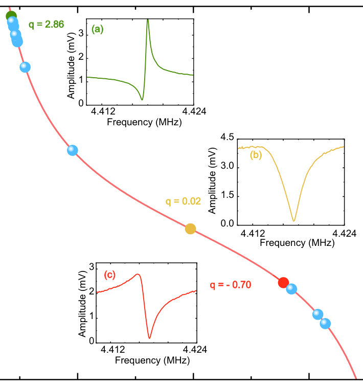
<figcaption class="paper-figure-caption"><b>Fig 4.</b> Figure 4. Evolution of the Fano asymmetry parameter. The Fano asymmetry parameter, q, is shown as a function of gate voltage, Vdc, across an accumulated interference phase in a range of 2π. The parameter q transitions continuously from positive to negative values as the gate voltage increases. Representative data points at selected gate voltages are indicated. Insets (a)–(c) display the corresponding SiNx Fano line shapes: inset (a) (green) illustrates a positive Fano parameter (q = 2.86), inset (b) (yellow) presents a nearly symmetric resonance with q = 0.02, and inset (c) (blue) depicts a negative Fano parameter (q = −0.70).</figcaption>
</figure>
<figure class="paper-figure-card">
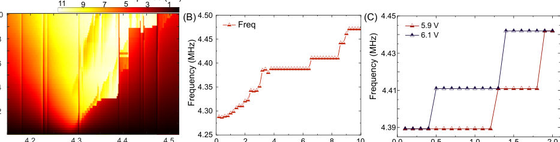
<figcaption class="paper-figure-caption"><b>Fig 5.</b> Figure 5. Frequency locking of the nonlinear graphene mode to the SiNx mode comb at Vdc = 113 V. (A) Measured graphene amplitude as a function of drive frequency and drive voltage amplitude Vac. The antiresonance lines remain pinned at the fixed SiNx frequencies at all drive levels, and the jump-down edge of the hardening Duffing response forms a staircase locked to successive SiNx modes. (B) Jump-down frequency ωJ/2π versus drive amplitude, extracted from (A): ωJ/2π is pinned on plateaus at the SiNx frequencies, within which ∂(ωJ/2π)/∂Vac ≈0 (frequency stabilization); the plateau widths reflect the coupling strength (cooperativity) of the individual modes. (C) Deterministic switching...</figcaption>
</figure>
</div>

<p><strong>Summary.</strong> The authors report on controlling Fano resonances in a graphene-SiNx nanomechanical system by tuning the coupling via an electric gate voltage. They show that this hybrid structure allows precise control over interference features (sign and magnitude of $q$). Furthermore, under strong driving, the discrete SiNx modes stabilize the graphene oscillation into quantized frequency plateaus, establishing it as a robust nanomechanical frequency reference.</p>
<p><strong>Why it may be interesting.</strong> This work provides a clean, controllable mechanical realization of fundamental quantum interference phenomena (Fano resonance) and demonstrates how discrete modes can act as stable frequency references or quantizers for a highly tunable oscillator, relevant to sensing and metrology.</p>
<details>
<summary>Detailed structure</summary>
<p><strong>Main problem.</strong> The study reports on the experimental observation and theoretical modeling of Fano resonances and frequency locking within a hybrid nanomechanical resonator.</p>
<p><strong>Main result.</strong> The system demonstrates tunable control over the Fano asymmetry parameter ($q$) in the linear regime, and exhibits frequency quantization via staircase locking when driven strongly in the nonlinear Duffing regime.</p>
<p><strong>Method.</strong> The research combines experimental measurements using confocal microscopy with theoretical modeling based on coupled oscillator equations and the Duffing oscillator framework.</p>
<p><strong>Model / system.</strong> The platform is a graphene-$    ext{SiN}_x$ hybrid nanomechanical resonator. The $  ext{SiN}_x$ modes act as high-Q discrete states, while the graphene mode acts as a tunable continuum state, coupled via electrostatic gating.</p>
<p><strong>Key observables.</strong> Fano asymmetry parameter ($q$), frequency locking plateaus (staircase structure), and phase jumps in the amplitude/phase response spectra.</p>
<p><strong>Important parameters / regimes.</strong> DC gate voltage ($V_{dc}$), which tunes detuning; drive power, controlling transition into the Duffing regime.</p>
<p><strong>Assumptions / limitations.</strong> The $    ext{SiN}_x$ modes are assumed to be unaffected by the gate voltage due to their large mass and built-in tension in the linear analysis.</p>
<p><strong>Figures summary.</strong> Figures show frequency domain spectra demonstrating phase jumps (Fig. 2), the $q-\Phi$ master curve comparing theory/experiment, and a staircase pattern of jump-down frequencies confirming locking onto discrete modes (Fig. S.7).</p>
<p><strong>Paper structure.</strong> The paper progresses from establishing tunable Fano resonances via gate control in the linear regime to analyzing the nonlinear dynamics where strong driving causes frequency locking, which is then confirmed by seeding experiments.</p>
</details>
<details>
<summary>Abstract</summary>
<p>Fano resonances, arising from the interference between discrete and continuum states, are observed across a wide range of quantum and classical systems. Here, we report the experimental observation of Fano resonances in a graphene SiNx hybrid nanomechanical system modeled as coupled oscillators. The broad, low quality factor graphene mode plays the role of the continuum, while the dense comb of sharp, high quality factor SiNx modes provides the discrete states. The inter-mode detuning is tunable via a DC gate voltage, enabling dynamic control of the Fano resonance: we demonstrate gate controlled switching of both the sign and the magnitude of the Fano asymmetry parameter $q$, in quantitative agreement with a coupled oscillator theory that predicts $q=-\cotφ$, with $φ$ the phase of the continuum response. At strong drive, the graphene mode enters the Duffing regime and its jump-down frequency locks to successive SiNx modes, producing a staircase of drive insensitive frequency plateaus; a weak seeding tone deterministically switches the resonator between adjacent locked states. The dense SiNx mode thus acts, in the linear regime, as the discrete states of a tunable Fano interferometer and, in the nonlinear regime, as a frequency ruler that stabilizes and quantizes the graphene oscillation. This platform offers a controllable mechanical realization of Fano interference and opens new avenues for high resolution hybrid resonant sensors and stable nanomechanical frequency references.</p>
</details>
<p><sub><a href="#top">↑ back to top</a></sub></p>

<p><a id="paper-2608.15441"></a></p>
<h3 id="josephson-network-as-amodel-for-high-temperature-superconductor-and-beyond-macroscopic-quantum-coherence-probed-by-microwave-absorption"><a href="http://arxiv.org/abs/2608.15441v1">Josephson network as a~model for high-temperature superconductor and beyond: Macroscopic quantum coherence probed by microwave absorption</a></h3>
<p><strong>Authors:</strong> Adam Rycerz<br>
<strong>Type:</strong> theory · <strong>Category:</strong> strongly correlated electrons · <strong>PDF:</strong> <a href="https://arxiv.org/pdf/2608.15441v1">https://arxiv.org/pdf/2608.15441v1</a><br>
<strong>Analysis basis:</strong> full PDF text, analyzed in chunks
<strong>Topic relevance:</strong> 🔥 <code>analog quantum simulation</code> <strong>4/5</strong> · <code>driven-dissipative phase transition</code> <strong>3/5</strong> · <code>methods for driven-dissipative</code> <strong>3/5</strong> · <code>Keldysh / 2PI / non-Gaussian methods</code> <strong>2/5</strong> · <code>non-equilibrium universality</code> <strong>2/5</strong> · <code>Frenkel-Kontorova</code> <strong>1/5</strong> · <code>correlated / nonlocal dissipation</code> <strong>1/5</strong> · <code>quantum measurements</code> <strong>1/5</strong> · <code>scars &amp; prethermalization</code> <strong>1/5</strong></p>
<div class="figure-strip-hint">↔ Scroll figures horizontally</div>
<div class="paper-figures-scroll">
<figure class="paper-figure-card">
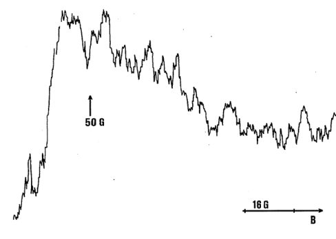
<figcaption class="paper-figure-caption"><b>Fig 1.</b> Figure 1: First derivative of the power MMMA spectrum show- ing the 50-G peak for a sample of the ceramic superconductor YBa2Cu3O7−x at T = 80 K. Reprinted from Ref. [4].</figcaption>
</figure>
<figure class="paper-figure-card">
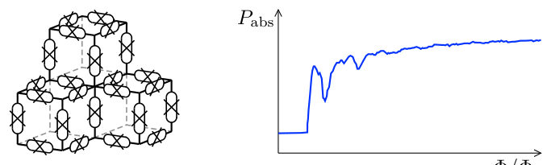
<figcaption class="paper-figure-caption"><b>Fig 2.</b> Figure 2: Selected theoretical models allowing to understand the absorption spectrum of Fig. 1. (a) A superconducting loop, pierced by a static flux Φ, is expected to show the minimal absorption for an ac signal when Φ ≈Φ(ext) min = nΦ0. (b) A single junction pierced by the flux, reducing its critical current Ic = Ic(Φ), and subjected to the ac bias current Iµ, shows the absorbed power (Pabs) that rises with Φ, reaching the maximum at Φ = Φ0, and then showing small quasiperiodic oscillations. (c) Three-dimensional Josephson network (schematic), containing N × N × N resistively and capacitively shunted junctions with some random variation of the parameters, is sufficient to account for the...</figcaption>
</figure>
<figure class="paper-figure-card">
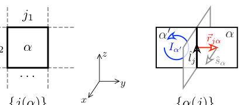
<figcaption class="paper-figure-caption"><b>Fig 3.</b> Figure 3: Schematic showing the set of junctions belonging to the loop α (left) and the set of loops containing the junction j (right). The cubic lattice case with the main axes aligned with the Cartesian coordinate system (middle) is chosen. Remaining symbols are de- fined in the main text.</figcaption>
</figure>
<figure class="paper-figure-card">
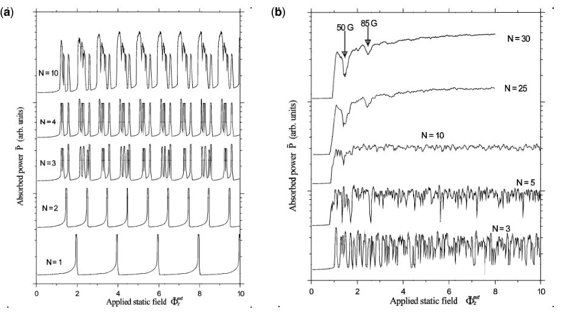
<figcaption class="paper-figure-caption"><b>Fig 4.</b> Figure 4: Power absorption vs applied magnetic field for the network containing N × N × N Josephson junctions. (a) Different networks of identical junctions (˜Γ0 = 5, ˜L0 = 1). (b) The parameters ˜Γ and ˜L were undergoing 10% Gaussian fluctuations around the mean values ˜Γ0, ˜L0. (Adapted from Ref. [18].)</figcaption>
</figure>
<figure class="paper-figure-card">
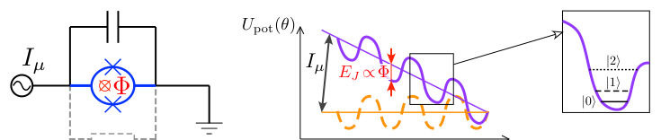
<figcaption class="paper-figure-caption"><b>Fig 5.</b> Figure 5: Left to right: Effective circuit for a single Josephson qubit, the potential energy controlled by the microwave bias current (Iµ) and the magnetic flux (Φ), and non-equidistant transmon energy levels (|0⟩and |1⟩span a computational subspace).</figcaption>
</figure>
</div>

<p><strong>Summary.</strong> This paper develops theoretical models to explain microwave absorption anomalies (MMMA) observed in high-temperature superconductors using a 3D Josephson network model. By simulating the coupled dynamics of these junctions, the authors show how discrete resonances evolve into continuous spectra as the system size increases. The results successfully predict characteristic minima that align with experimental findings and draw parallels to superconducting quantum circuits.</p>
<p><strong>Why it may be interesting.</strong> The detailed modeling of collective nonlinear oscillations in Josephson junctions provides a rich platform for studying macroscopic quantum coherence, phase transitions, and the interplay between disorder and coherent quantum behavior, relevant to open quantum systems.</p>
<details>
<summary>Detailed structure</summary>
<p><strong>Main problem.</strong> The paper aims to theoretically model Magnetically-Modulated Microwave Absorption (MMMA) spectra observed in inhomogeneous high-temperature superconductors.</p>
<p><strong>Main result.</strong> Increasing the size of the Josephson network causes discrete resonance peaks to fill out and smooth, while residual minima persist at specific magnetic flux values that match experimental observations.</p>
<p><strong>Method.</strong> The authors employ numerical simulations solving coupled nonlinear differential equations derived from superconducting loop dynamics, supplemented by elementary analytical approximations for small vibrations.</p>
<p><strong>Model / system.</strong> The system is a 3D Josephson network modeled as an array of coupled Josephson junctions with random parameters. The dynamics are governed by flux quantization and junction electrodynamics, analogous to modeling high-Tc superconductors or Josephson qubits.</p>
<p><strong>Key observables.</strong> Microwave absorption power ($  ilde{P}$) as a function of external magnetic flux ($ ilde{\Phi}_{    ext{ext},z}$), exhibiting characteristic anomalies and minima.</p>
<p><strong>Important parameters / regimes.</strong> System size ($N$), junction parameters (resistivity, capacitance, inductance), and the applied external magnetic field $   ilde{\Phi}_{    ext{ext}}$.</p>
<p><strong>Assumptions / limitations.</strong> The analysis assumes zero net current flowing through the lattice for large systems; approximations are used for small vibrations around minimum potential energy points.</p>
<p><strong>Figures summary.</strong> Figures illustrate theoretical models comparing absorption from superconducting loops, single junctions, and 3D networks. Figure 4(a) shows power evolution with system size $N$, while Figure 5 relates the model to Josephson qubit energy levels.</p>
<p><strong>Paper structure.</strong> The paper reviews established theories (flux quantization, vortex dynamics), develops a lattice approach for 3D arrays, performs numerical simulations showing size-dependent spectral filling, and concludes by drawing analogies between superconducting lattices and quantum circuits like qubits.</p>
</details>
<details>
<summary>Abstract</summary>
<p>Since the seminal experiment by Stankowski et al. [Phys. Rev. B 36, 7126 (1987)] on YBa$_2$Cu$_3$O$_{7-x}$, Magnetically-Modulated Microwave Absorption (MMMA) has become an important technique for detecting the superconducting transition in inhomogeneous ceramic compounds. The rise of microwave absorption below $T_c$ is accompanied by several low-field anomalies, usually attributed to the weak links between superconducting grains showing the Josephson effect, or to the dynamics of Abrikosov-Josephson vortices. In this article, we briefly review selected theoretical models rationalizing MMMA spectra for high-temperature superconductors, focusing on the $3$-dimensional array of Josephson junctions with random parameters including the resistivity, capacity and inductance of each junction, showing characteristic absorption anomalies observed in the experiment. The implications for recently studied microwave absorption in Josephson junction qubits are also discussed.</p>
</details>
<p><sub><a href="#top">↑ back to top</a></sub></p>

<p><a id="paper-2608.15208"></a></p>
<h3 id="driven-time-crystal-in-low-symmetry-enz-conductors"><a href="http://arxiv.org/abs/2608.15208v1">Driven Time Crystal in Low-Symmetry ENZ Conductors</a></h3>
<p><strong>Authors:</strong> Mario G. Silveirinha<br>
<strong>Type:</strong> theory · <strong>Category:</strong> other · <strong>PDF:</strong> <a href="https://arxiv.org/pdf/2608.15208v1">https://arxiv.org/pdf/2608.15208v1</a><br>
<strong>Analysis basis:</strong> full PDF text, analyzed in chunks
<strong>Topic relevance:</strong> 🔥 <code>driven-dissipative phase transition</code> <strong>4/5</strong> · <code>interference shaping light</code> <strong>3/5</strong> · <code>Keldysh / 2PI / non-Gaussian methods</code> <strong>2/5</strong> · <code>methods for driven-dissipative</code> <strong>2/5</strong> · <code>non-equilibrium universality</code> <strong>2/5</strong> · <code>analog quantum simulation</code> <strong>1/5</strong> · <code>correlated / nonlocal dissipation</code> <strong>1/5</strong> · <code>quantum measurements</code> <strong>1/5</strong></p>
<div class="figure-strip-hint">↔ Scroll figures horizontally</div>
<div class="paper-figures-scroll">
<figure class="paper-figure-card">
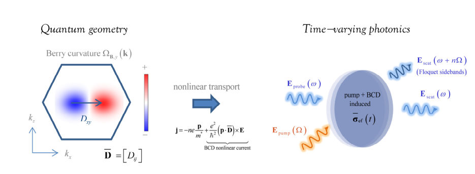
<figcaption class="paper-figure-caption"><b>Fig 1.</b> Fig. 1 Left: Illustration of the origin of the Berry curvature dipole. The figure shows a density plot of the y-</figcaption>
</figure>
<figure class="paper-figure-card">

<figcaption class="paper-figure-caption"><b>Fig 2.</b> Fig. 2 (a) Sketch of the geometry of the spheroidal nanoparticle. The spheroid symmetry axis is aligned with the z-</figcaption>
</figure>
<figure class="paper-figure-card">
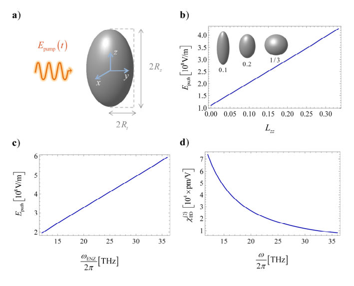
<figcaption class="paper-figure-caption"><b>Fig 3.</b> Figure 2c illustrates the impact of changing the ENZ crossing point on the threshold field.</figcaption>
</figure>
<figure class="paper-figure-card">
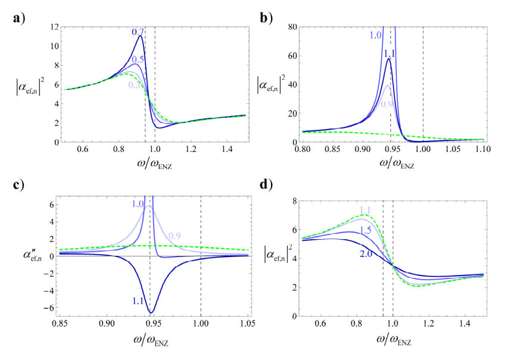
<figcaption class="paper-figure-caption"><b>Fig 4.</b> Fig. 3 (a)-(b) Normalized scattering strength as a function of the probe frequency for different pump-field</figcaption>
</figure>
</div>

<p><strong>Summary.</strong> This paper proposes utilizing low-symmetry conductors near the epsilon-near-zero point as a superior platform for realizing optically driven time crystals. By exploiting the anomalous velocity nonlinearity ($\chi^{(2)}$), the authors demonstrate that these materials can achieve robust, ultrafast optical modulation necessary for parametric amplification and advanced light control in nanoscale devices.</p>
<p><strong>Why it may be interesting.</strong> This work bridges concepts from topological physics (Berry curvature dipole) with nonlinear optics and quantum electrodynamics. The ability to engineer time-periodic optical responses using material symmetry is highly relevant for advanced quantum light sources and detectors.</p>
<details>
<summary>Detailed structure</summary>
<p><strong>Main problem.</strong> The research aims to develop a robust platform for achieving time-crystalline behavior in optical systems using optical-cycle modulation, overcoming limitations associated with conventional materials like TCOs.</p>
<p><strong>Main result.</strong> Low-symmetry conductors near the epsilon-near-zero point can naturally exhibit a driven time-crystalline response via their anomalous-velocity nonlinearity. This allows for parametric amplification and strong control over probe beam scattering/extinction.</p>
<p><strong>Method.</strong> The analysis employs a BCD-Drude model in the time domain, linearizing master equations to study the induced nonlinear optical response of subwavelength nanoparticles.</p>
<p><strong>Model / system.</strong> The system involves low-symmetry conductors operating near the ENZ regime. The core physics is modeled using the BCD-Drude formalism, which incorporates an anomalous current density ($\mathbf{j}_{an}$) derived from the Berry curvature dipole ($\mathbf{D}$).</p>
<p><strong>Key observables.</strong> Time-crystalline response, parametric amplification, probe scattering/extinction (including negative extinction), and second-order nonlinear current density ($\mathbf{j}^{(2)}$).</p>
<p><strong>Important parameters / regimes.</strong> The analysis is restricted to the semiclassical regime where field frequencies are much smaller than interband transition frequencies. The key material feature is low symmetry, enabling $\chi^{(2)}$ effects.</p>
<p><strong>Assumptions / limitations.</strong> The study assumes a quasistatic approximation for the subwavelength nanoparticle and operates within the semiclassical limit of photon-electron interactions.</p>
<p><strong>Figures summary.</strong> Figure 1 illustrates the origin of the Berry curvature dipole ($\mathbf{B}_y$), its role in generating anomalous velocity, and how optical pumping leads to a time-dependent effective conductivity and driven time-crystalline response.</p>
<p><strong>Paper structure.</strong> The paper first establishes the limitations of $\chi^{(3)}$ systems (like TCOs) for rapid modulation. It then introduces low-symmetry conductors as an alternative leveraging $\chi^{(2)}$ nonlinearity via anomalous velocity, culminating in a theoretical demonstration using the BCD-Drude model to predict time-crystalline behavior and amplification.</p>
</details>
<details>
<summary>Abstract</summary>
<p>In recent years, epsilon-near-zero (ENZ) materials have attracted a great deal of attention in nonlinear optics, as they combine field enhancement with strong, ultrafast nonlinearities. In particular, transparent conducting oxides, such as ITO, have emerged as a promising class of materials and have been extensively exploited to achieve temporal optical responses varying on the femtosecond scale using an optical pump. Most of the solutions discussed so far in the literature rely on effective $χ^{(3)}$ modulations, wherein the dominant material response is controlled by the envelope of the optical pump. Here, it is shown that low-symmetry conductors can provide an interesting alternative to transparent conducting oxides and a more natural implementation of time-crystalline behavior in optical systems with optical-cycle modulation. I demonstrate that ENZ confinement, combined with the strong anomalous-velocity nonlinearity of low-symmetry conductors, enables a subwavelength nanoparticle to develop a time-crystalline response under optical pumping. For sufficiently strong pumping, this response can overcome dissipative losses and lead to parametric amplification. Furthermore, the pump can strongly tailor the scattering and extinction of a weak probe and, in extreme cases, render the extinction negative. In this regime, the driven nanoparticle effectively amplifies the probe beam.</p>
</details>
<p><sub><a href="#top">↑ back to top</a></sub></p>

<p><a id="paper-2608.15551"></a></p>
<h3 id="individual-vanadium-dopants-form-deep-in-gap-states-in-monolayer-ws2"><a href="http://arxiv.org/abs/2608.15551v1">Individual Vanadium Dopants Form Deep In-Gap States in Monolayer WS2</a></h3>
<p><strong>Authors:</strong> Tianhui Zhu, Carlos A. Gonzalez, Shihao Tu, Søren Tornøe, Ivan Pelayo, Dong-Rong Wu, Zhehao Ge, Hem Prasad Bhusal, Kenji Watanabe, Takashi Taniguchi, Nobuhiko P. Kobayashi, Yuan Ping, Jairo Velasco, Aiming Yan<br>
<strong>Type:</strong> both · <strong>Category:</strong> quantum information and computing · <strong>PDF:</strong> <a href="https://arxiv.org/pdf/2608.15551v1">https://arxiv.org/pdf/2608.15551v1</a><br>
<strong>Analysis basis:</strong> full PDF text, analyzed in chunks
<strong>Topic relevance:</strong> 🔥 <code>QC/QI experiment</code> <strong>4/5</strong> · <code>quantum measurements</code> <strong>2/5</strong> · <code>analog quantum simulation</code> <strong>1/5</strong> · <code>driven-dissipative phase transition</code> <strong>1/5</strong> · <code>methods for driven-dissipative</code> <strong>1/5</strong></p>
<div class="figure-strip-hint">↔ Scroll figures horizontally</div>
<div class="paper-figures-scroll">
<figure class="paper-figure-card">
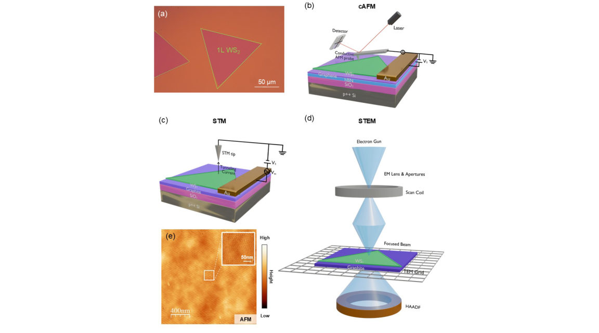
<figcaption class="paper-figure-caption"><b>Fig 1.</b> Figure 1 Overview of characterization techniques and transition metal dichalcogenide</figcaption>
</figure>
<figure class="paper-figure-card">
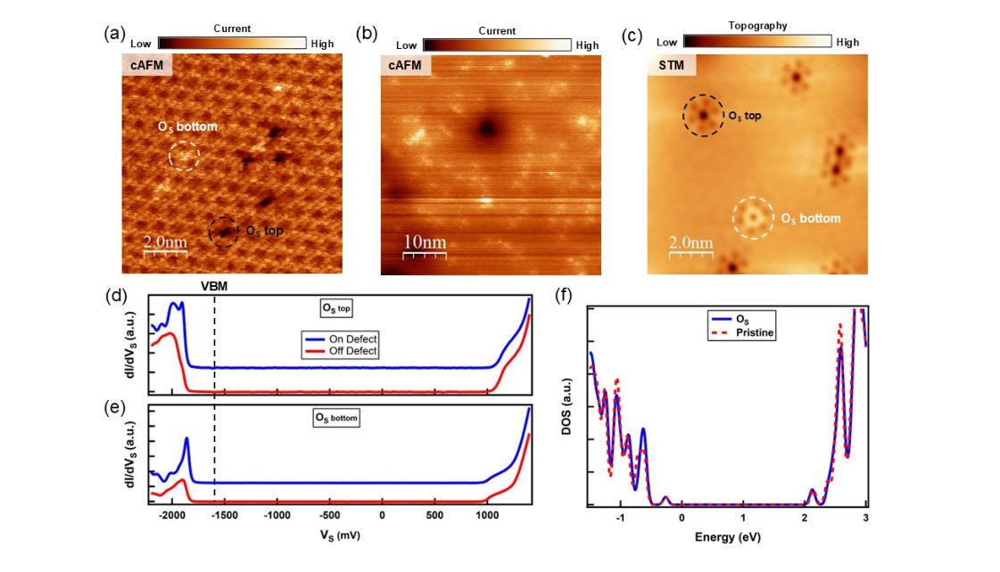
<figcaption class="paper-figure-caption"><b>Fig 2.</b> Figure 2 Characterization of pristine WS2 monolayer with atomic resolution, using</figcaption>
</figure>
<figure class="paper-figure-card">
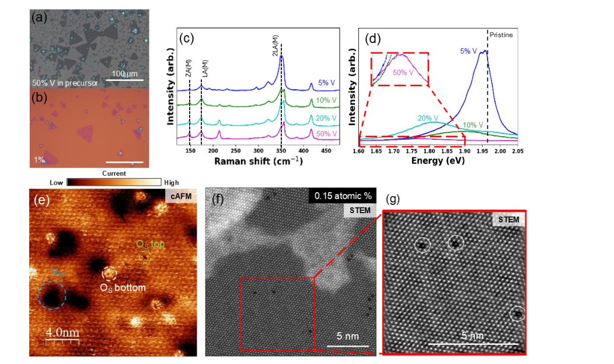
<figcaption class="paper-figure-caption"><b>Fig 3.</b> Figure 3 Characterization of V-WS2 with SPM and optical spectroscopy. (a-b) Optical</figcaption>
</figure>
<figure class="paper-figure-card">
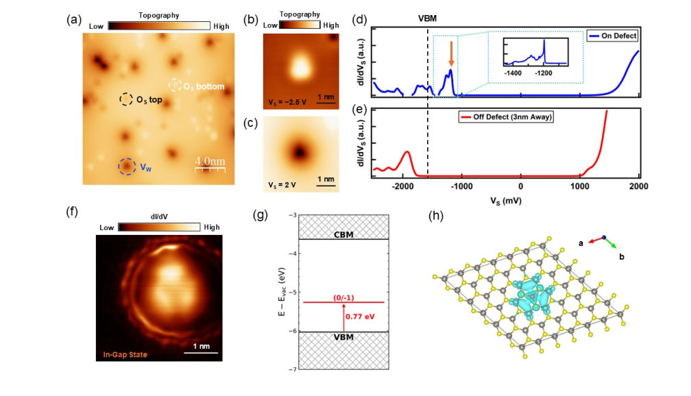
<figcaption class="paper-figure-caption"><b>Fig 4.</b> Figure 4 STM/STS characterization and DFT modeling of V-WS2. (a) STM topography at</figcaption>
</figure>
</div>

<p><strong>Summary.</strong> This work addresses the challenge of defect engineering in 2D materials by doping monolayer $  ext{WS}_2$ with Vanadium ($ ext{V}$). Using a combination of CVD synthesis and advanced scanning probe microscopy (STM/STS, cAFM), the authors experimentally confirmed that these dopants introduce distinct deep electronic states into the band gap. This establishes $  ext{V-WS}_2$ as a promising platform for quantum information science applications.</p>
<p><strong>Why it may be interesting.</strong> The ability to precisely engineer and spectroscopically confirm localized quantum states within a solid-state platform like $    ext{WS}_2$ is directly relevant to building solid-state qubits or quantum memory elements.</p>
<details>
<summary>Detailed structure</summary>
<p><strong>Main problem.</strong> The challenge of engineering dopants in atomically thin materials to reliably create and identify deep electronic states suitable for quantum information science.</p>
<p><strong>Main result.</strong> Vanadium dopants ($    ext{V}$) incorporated into monolayer $  ext{WS}_2$ form distinct, measurable deep in-gap electronic states ($0.35 	ext{ eV}$ above the valence band maximum).</p>
<p><strong>Method.</strong> The study combines synthesis via CVD with advanced characterization techniques like STM/STS and cAFM, supported by first-principles DFT calculations.</p>
<p><strong>Model / system.</strong> The physical system is monolayer $  ext{WS}_2$ (a 2D TMD) doped with Vanadium ($    ext{V}$), allowing for the study of point defects and their localized electronic signatures.</p>
<p><strong>Key observables.</strong> In-gap state energy levels, defect density ($  ext{cm}^{-2}$), charge transition levels ($    ext{CTLs}$), and local current maps.</p>
<p><strong>Important parameters / regimes.</strong> The key energy level is $0.35 	ext{ eV}$ above the valence band maximum; defect densities are in the range of $10^{11} - 10^{12} 	ext{ cm}^{-2}$.</p>
<p><strong>Assumptions / limitations.</strong> The analysis relies on the assumption that localized electronic states observed via STM/STS correspond to specific dopant configurations ($  ext{VW}$ defects) modeled by DFT.</p>
<p><strong>Figures summary.</strong> Figures illustrate schematics of characterization probes (cAFM, STM/STS, STEM), showing current maps and topography confirming defect signatures in pristine $ ext{WS}_2$ and $    ext{V-WS}_2$.</p>
<p><strong>Paper structure.</strong> The paper progresses by first establishing the need for controlled dopant engineering; it then details the experimental characterization of defects (OS vs. V) using multiple probes, culminating in DFT confirmation of the electronic structure and suitability for QISE.</p>
</details>
<details>
<summary>Abstract</summary>
<p>Point defects in atomically thin materials have a strong impact on physical properties and those that induce in-gap states are advantageous for quantum information science and engineering (QISE). However, dopant engineering consisting of well-controlled synthesis and robust identification of in-gap states is challenging. In this work, we addressed this challenge by first using finely tuned chemical vapor deposition to incorporate vanadium dopants into a monolayer WS2 (V-WS2). Next, we utilized a suite of scanned probe microscopy techniques to identify and characterize individual dopants. The latter included conductive atomic force microscopy (cAFM), low temperature scanning tunneling microscopy and spectroscopy (STM/STS), and scanning transmission electron microscopy and unambiguously revealed that vanadium dopants form deep in-gap states 0.35 eV above the valence band maximum in V-WS2. Our experimental results are well supported by first principles calculations and taken together demonstrate that V-WS2 is a promising platform for QISE applications.</p>
</details>
<p><sub><a href="#top">↑ back to top</a></sub></p>

<p><a id="paper-2608.16446"></a></p>
<h3 id="raman-detected-quantum-dot-microscopy-for-nanoscale-electrostatic-potential-imaging"><a href="http://arxiv.org/abs/2608.16446v1">Raman-detected quantum dot microscopy for nanoscale electrostatic potential imaging</a></h3>
<p><strong>Authors:</strong> Jiří Doležal, Amandeep Sagwal, Rodrigo Cezar de Campos Ferreira, Martin Švec<br>
<strong>Type:</strong> experiment · <strong>Category:</strong> other · <strong>PDF:</strong> <a href="https://arxiv.org/pdf/2608.16446v1">https://arxiv.org/pdf/2608.16446v1</a><br>
<strong>Analysis basis:</strong> full PDF text, analyzed in chunks
<strong>Topic relevance:</strong> 🔥 <code>quantum measurements</code> <strong>4/5</strong> · <code>quantum optics experiment</code> <strong>2/5</strong> · <code>driven-dissipative phase transition</code> <strong>1/5</strong></p>
<div class="figure-strip-hint">↔ Scroll figures horizontally</div>
<div class="paper-figures-scroll">
<figure class="paper-figure-card">
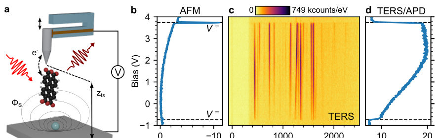
<figcaption class="paper-figure-caption"><b>Fig 1.</b> Fig. 1 Optically detected SQDM experiment. a, Schematic of the TERS–SQDM experimental setup. A PTCDA quantum dot (QD) is attached to the tip apex. Changes in the QD charge state are detected either through the atomic- force response or through changes in the TERS intensity. b, Frequency-shift, ∆f(V ), dependence with two charging peaks (V +, V −) marked by dotted lines. c, Heatmap of voltage-dependent Raman spectra acquired with a 1.96 eV laser. d, Integrated photon intensity, IAPD, above 640 nm (∼156 cm−1) recorded with an APD during the voltage sweep shown in b. The intensity changes coincide with the charging peaks. All data were acquired with the same oscillating tip using an amplitude...</figcaption>
</figure>
<figure class="paper-figure-card">
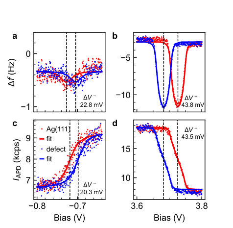
<figcaption class="paper-figure-caption"><b>Fig 2.</b> Fig. 2 Equivalence of TERS- and force-detected QD spectroscopy. a–d, Shifts of the V + and V −thresholds, indicated by dashed lines, measured above a subsurface defect on Ag(111) (blue) and 7 nm away on the bare surface (red). a,b, Frequency-shift, ∆f(V ), signal. c,d, Raman intensity, IAPD. Solid lines show fits using the frequency-shift response equation (21) and the occupation-broadened TERS intensity function equation (16), respectively. The broadening parameters were fixed from the oscillation-amplitude dependence shown in Extended Data Fig. 3, leaving only the charging threshold V0 as a free parameter. Measurements were performed at zts = 2.7 nm with an oscillation amplitude of 50 pm.</figcaption>
</figure>
<figure class="paper-figure-card">
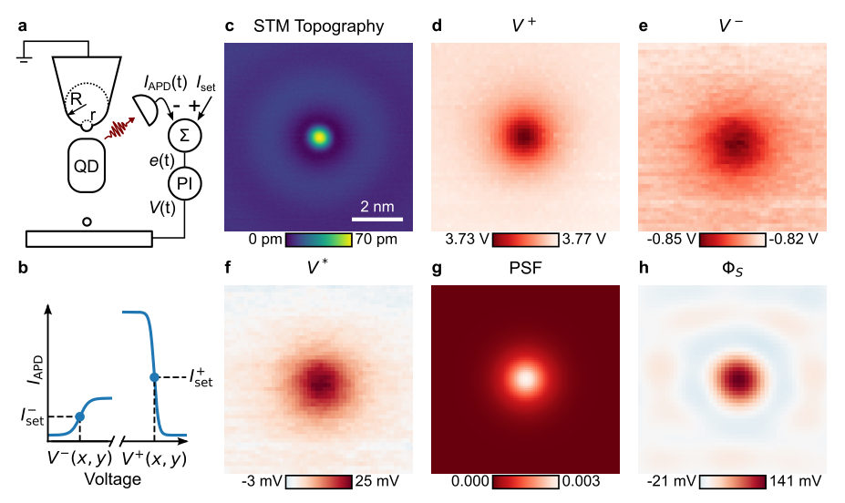
<figcaption class="paper-figure-caption"><b>Fig 3.</b> Fig. 3 Electrostatic-potential imaging of an Ag adatom. a, Schematic of the feedback scheme used for TERS- SQDM. The STM tip is represented by a sphere-on-sphere geometry, consisting of a spherical body with radius of curvature (R), terminated by a smaller hemispherical apex of radius (r), following the tip model used to simulate sub-nanometre- resolved TEPL images[20]. b, Schematic bias-dependent TERS intensity curves with the centers of the step used as setpoints to track V + and V −. c, STM topography of an Ag adatom on Ag(111) acquired in constant-current mode with an Ag tip at 100 mV and 10 pA. d,e, V + and V −maps acquired with bias feedback at the tip–sample distance of zts = 2.6 nm....</figcaption>
</figure>
<figure class="paper-figure-card">
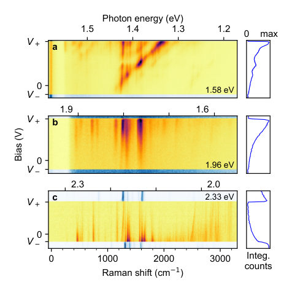
<figcaption class="paper-figure-caption"><b>Fig 4.</b> Fig. 4 Voltage-dependent Raman spectra acquired with different laser energies. a, Raman spectra acquired with a 1.58 eV laser. b, Raman spectra acquired with a 1.96 eV laser. c, Raman spectra acquired with a 2.33 eV laser. The acquisition time per spectrum was 5 s in a, 5 s in b, and 3 s in c.</figcaption>
</figure>
</div>

<p><strong>Summary.</strong> The research introduces an advanced technique using Tip-Enhanced Raman Spectroscopy (TERS) to map electrostatic potentials on surfaces. By monitoring changes in the molecule's Raman signal as it charges, researchers can achieve quantitative measurements equivalent to traditional force microscopy methods. This offers a powerful, optically driven tool for understanding charge dynamics at the nanoscale.</p>
<p><strong>Why it may be interesting.</strong> This work bridges quantum optics (Raman scattering) with surface science/condensed matter physics by providing a non-contact, optically enhanced method to probe local electronic structure and potential landscapes at the atomic scale.</p>
<details>
<summary>Detailed structure</summary>
<p><strong>Main problem.</strong> The primary goal is to develop an optical detection method for quantifying electrostatic potentials at the nanoscale, overcoming limitations in speed and complexity associated with traditional force spectroscopy techniques.</p>
<p><strong>Main result.</strong> The integrated Tip-Enhanced Raman Scattering (TERS) intensity was shown to correlate strongly with the quantum dot's charge state, allowing for quantitative mapping of the electrostatic potential ($\Phi_S$) with accuracy comparable to established AFM methods.</p>
<p><strong>Method.</strong> Electrostatic potential is mapped by measuring the charging threshold voltages ($V_+$ and $V_-$) using a feedback loop controlling the TERS signal intensity. This technique replaces force measurements ($\Delta f(V)$) with optical detection of molecular charge state changes.</p>
<p><strong>Model / system.</strong> The experiment uses molecular quantum dots (PTCDA molecules) suspended on an atomically sharp tip, measured via Tip-Enhanced Raman Spectroscopy (TERS) in a Scanning Probe Microscopy setup. The potential mapping relies on the charging response of these QDs.</p>
<p><strong>Key observables.</strong> Integrated TERS intensity ($I_{APD}(V)$), charge state switching thresholds ($V_+$, $V_-$), and the reconstructed electrostatic potential map ($\Phi_S(x, y)$).</p>
<p><strong>Important parameters / regimes.</strong> Bias voltage ($V$), excitation wavelength (e.g., 1.58 eV, 1.96 eV, 2.33 eV), and tip-sample geometry parameters.</p>
<p><strong>Assumptions / limitations.</strong> The reconstruction of the potential assumes a sphere-on-sphere tip geometry model; systematic errors like upward shifts in $V_-$ due to illumination are noted but deemed negligible for dipole moment quantification.</p>
<p><strong>Figures summary.</strong> Figures compare TERS intensity vs. force shift ($\Delta f(V)$) responses, show direct mapping of $\Phi_S$ around adatoms on Ag(111), and illustrate the bias-dependent spectral changes (Stark shifts) in TERS spectra.</p>
<p><strong>Paper structure.</strong> The paper progresses from establishing the need for nanoscale potential measurement to demonstrating the TERS detection method. It compares this optical approach against established force spectroscopy, details the quantitative mapping process using feedback control, and finally analyzes the underlying photophysical mechanism driving the signal variation.</p>
</details>
<details>
<summary>Abstract</summary>
<p>Quantification of electrostatic potentials at the nanoscale is crucial for understanding the principles governing properties of materials across multiple length scales. Currently, one of the most successful approaches relies on the charging response of a molecular quantum dot, suspended on a tip of a scanning probe microscope and measured using dynamic force spectroscopy. We investigate the possibility of an optical detection, aiming to improve the speed and reduce the complexity of this measurement scheme. We show that the integrated tip-enhanced Raman scattering intensity strongly correlates with the charge state of the quantum dot, and use it to map the electrostatic potential of a single atom. A quantitative equivalence with the established force spectroscopy method is found. We address the underlying photophysical principle of this new method by measuring the Raman spectra as a function of excitation wavelength and the molecular quantum dot charge. We reveal that the observed Raman intensity variations are primarily driven by transitions between resonant and non-resonant Raman scattering regimes of the molecule.</p>
</details>
<p><sub><a href="#top">↑ back to top</a></sub></p>

<p><a id="paper-2608.15953"></a></p>
<h3 id="electrically-switchable-spintronics-in-a-multiferroic-altermagnet"><a href="http://arxiv.org/abs/2608.15953v1">Electrically Switchable Spintronics in a Multiferroic Altermagnet</a></h3>
<p><strong>Authors:</strong> Martin Latorre<br>
<strong>Type:</strong> theory · <strong>Category:</strong> other · <strong>PDF:</strong> <a href="https://arxiv.org/pdf/2608.15953v1">https://arxiv.org/pdf/2608.15953v1</a><br>
<strong>Analysis basis:</strong> full PDF text, analyzed in chunks
<strong>Topic relevance:</strong> <code>Keldysh / 2PI / non-Gaussian methods</code> <strong>3/5</strong> · <code>methods for driven-dissipative</code> <strong>3/5</strong> · <code>analog quantum simulation</code> <strong>2/5</strong> · <code>driven-dissipative phase transition</code> <strong>2/5</strong> · <code>non-equilibrium universality</code> <strong>2/5</strong> · <code>quantum measurements</code> <strong>2/5</strong> · <code>correlated / nonlocal dissipation</code> <strong>1/5</strong> · <code>scars &amp; prethermalization</code> <strong>1/5</strong></p>
<div class="figure-strip-hint">↔ Scroll figures horizontally</div>
<div class="paper-figures-scroll">
<figure class="paper-figure-card">
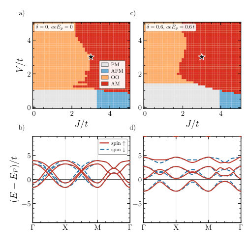
<figcaption class="paper-figure-caption"><b>Fig 1.</b> Figure 1. Ground-state phase diagram and spin-resolved band structure of the dimerized altermagnet, in units of the master hopping t ≡|t1| at one-eighth filling. (a,c) Mean-field phase diagram in the J–V plane, with the four phases (PM, AFM, OO, AM) read from the staggered amplitudes (m, o); the star marks the working point J = V = 3t. (b,d) Spin-resolved bands along Γ–X–M–Γ, as (E −EF )/t, with spin ↑(solid red) and ↓(dashed blue) split by the d-wave altermagnetic mechanism. Left column (a,b): undimerized reference, δ = 0, eaEy = 0. Right column (c,d): δ = 0.6, eaEy = 0.6 t, where the SSH modulation opens gaps while leaving the splitting intact.</figcaption>
</figure>
<figure class="paper-figure-card">
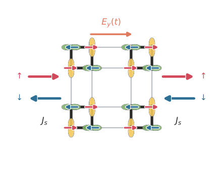
<figcaption class="paper-figure-caption"><b>Fig 2.</b> Figure 3. Spin-current generation under a time-dependent field Ey(t). Red (blue) arrows denote the up (down) spin channel on the two dimerized sublattices; opposite orbital orientations encode the altermagnetic d-wave order. A time-varying field injects a longitudinal spin current, Js = Zs χs dEy/dt, where χs is the spin susceptibility and Zs mea- sures the spin injection.</figcaption>
</figure>
<figure class="paper-figure-card">
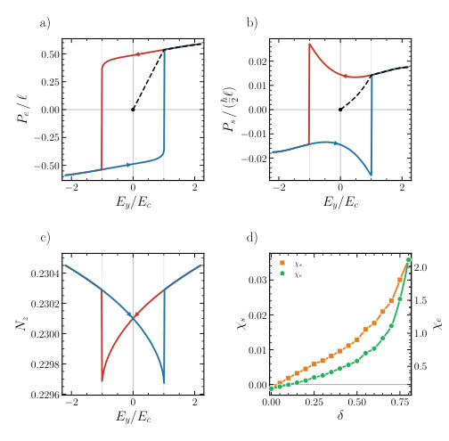
<figcaption class="paper-figure-caption"><b>Fig 3.</b> Figure 2. Quasi-static loops of the two polarizations, mag- netic order versus the applied electric field Ey and Zero-field multiferroic susceptibility of both polarization channels as a function of the dimerization δ in the altermagnetic state at one-eighth filling (J = V = 3t, dimerization δ = 0.6). Red and blue curves show the two sweep directions; vertical dashed lines mark the virgin curve. (a–b) Charge Pe in units of ℓ= e a/Acell and spin Ps polarizations in units of ℓℏ/2. Both form square, odd-in-Ey loops and switch simultaneously at the same coercive field. (c) The z component of the N´eel vec- tor Nz, even in Ey, forming a butterfly loop with maxima at the coercive fields,...</figcaption>
</figure>
</div>

<p><strong>Summary.</strong> This work presents a minimal theoretical model for an electrically switchable altermagnet that simultaneously exhibits ferroelectricity and spin polarization. The key finding is the dynamic entanglement of these three orders, allowing electric fields to control pure spin currents without needing traditional magnetic materials or SOC. This offers a blueprint for low-power spintronic devices.</p>
<p><strong>Why it may be interesting.</strong> While focused on condensed matter magnetism/electronics, the concept of dynamically entangled order parameters controlled by an external field (electric field switching magnetic properties) is highly relevant to open quantum systems and non-equilibrium dynamics studies.</p>
<details>
<summary>Detailed structure</summary>
<p><strong>Main problem.</strong> To develop a minimal theoretical framework capturing the simultaneous emergence and dynamic entanglement of altermagnetic order, ferroelectricity, and spin-polarized transport in one system.</p>
<p><strong>Main result.</strong> The model demonstrates that electric field switching can synchronously control charge polarization, spin polarization, and Néel order, enabling pure spin current generation without relying on SOC or external magnetic fields.</p>
<p><strong>Method.</strong> Mean-field theory is employed to analyze the ground state phase diagram and calculate quasi-static hysteresis loops for various order parameters.</p>
<p><strong>Model / system.</strong> The system is a dimerized altermagnet modeled on a 2D lattice, described by a Hamiltonian incorporating kinetic, Heisenberg, orbital exchange, and an electric field coupling term. The model explicitly couples the three orders: magnetic (Néel amplitude $m$), orbital ($o$), and electric polarization ($P_e$).</p>
<p><strong>Key observables.</strong> Charge polarization ($P_e$), spin polarization ($P_s$), Néel vector magnitude ($m$), and induced pure spin current density ($J_s$).</p>
<p><strong>Important parameters / regimes.</strong> Spin exchange ($J$), orbital exchange ($V$), dimerization ($\delta$), and external electric field ($E$).</p>
<p><strong>Assumptions / limitations.</strong> The model is a minimal 'toy model' designed for symmetry analysis; the coupling to $E$ is simplified by mapping it to an intracell staggered component.</p>
<p><strong>Figures summary.</strong> Figures illustrate the four-phase ground state diagram (PM, AFM, OO, AM), quasi-static hysteresis loops showing synchronous switching of $P_e$, $P_s$, and $m$ with $E$, and spin current generation under time-varying fields.</p>
<p><strong>Paper structure.</strong> The paper establishes the theoretical framework by defining the Hamiltonian; it analyzes the phase diagram to show coexisting orders; it then calculates the magnetoelectric coupling via hysteresis loops, culminating in predictions for electrically driven pure spin currents.</p>
</details>
<details>
<summary>Abstract</summary>
<p>We introduce a minimal model of a two-dimensional lattice that, upon spontaneous symmetry breaking, simultaneously develops altermagnetic order, a finite electric polarization, and a spin-polarized transport response, all of which are controlled by an external electric field. By coupling a dimerized altermagnet to an external electric field, we show that the three order parameters are not merely compatible but dynamically entangled, so that switching one (for instance, reversing the polarization with an electric field) necessarily reconfigures the other two. We show that this model offers a clear physical blueprint for designing next-generation spintronic logic and pure spin current memdevices that merge the ultrafast, stray-field-free advantages of compensated magnets with the low-power switching architectures of ferroelectrics.</p>
</details>
<p><sub><a href="#top">↑ back to top</a></sub></p>

<p><a id="paper-2608.16826"></a></p>
<h3 id="tuning-single-molecule-fluorescence-by-atomic-scale-control-of-the-local-environment"><a href="http://arxiv.org/abs/2608.16826v1">Tuning single-molecule fluorescence by atomic-scale control of the local environment</a></h3>
<p><strong>Authors:</strong> Thiago G. L. Brito, Daniel Arribas, Sofia Canola, Klaus Kuhnke, Tomáš Neuman, Anna Rosławska<br>
<strong>Type:</strong> both · <strong>Category:</strong> other · <strong>PDF:</strong> <a href="https://arxiv.org/pdf/2608.16826v1">https://arxiv.org/pdf/2608.16826v1</a><br>
<strong>Analysis basis:</strong> full PDF text, analyzed in chunks
<strong>Topic relevance:</strong> <code>interference shaping light</code> <strong>3/5</strong> · <code>quantum optics experiment</code> <strong>3/5</strong> · <code>Tavis-Cummings &amp; cavity-many-emitter</code> <strong>2/5</strong> · <code>driven-dissipative phase transition</code> <strong>2/5</strong> · <code>Keldysh / 2PI / non-Gaussian methods</code> <strong>1/5</strong> · <code>analog quantum simulation</code> <strong>1/5</strong> · <code>correlated / nonlocal dissipation</code> <strong>1/5</strong> · <code>methods for driven-dissipative</code> <strong>1/5</strong> · <code>quantum measurements</code> <strong>1/5</strong></p>
<div class="figure-strip-hint">↔ Scroll figures horizontally</div>
<div class="paper-figures-scroll">
<figure class="paper-figure-card">
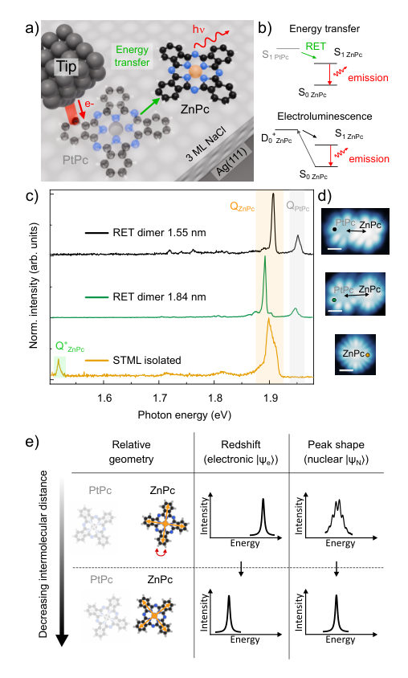
<figcaption class="paper-figure-caption"><b>Fig 1.</b> FIG. 1. Probing the influence of the environment on the optical properties of a single</figcaption>
</figure>
<figure class="paper-figure-card">
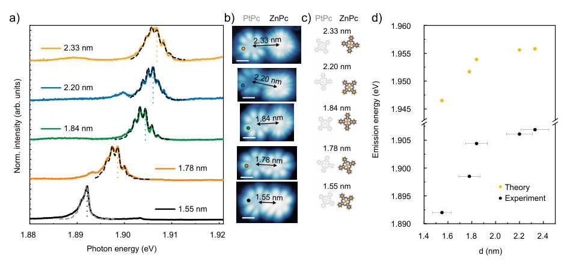
<figcaption class="paper-figure-caption"><b>Fig 2.</b> FIG. 2. Controlling single-molecule fluorescence via the local environment. a) High-</figcaption>
</figure>
<figure class="paper-figure-card">
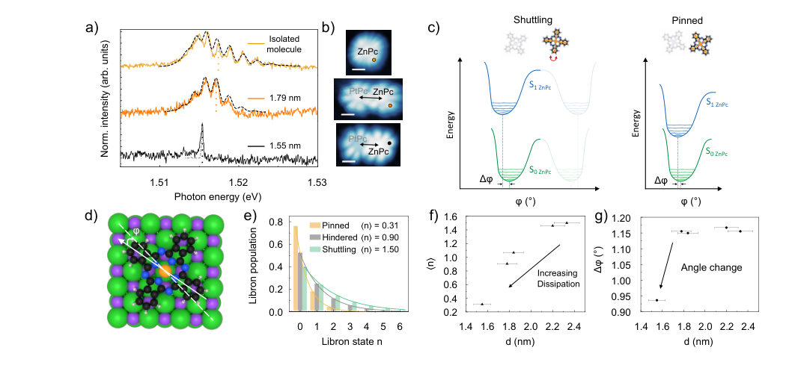
<figcaption class="paper-figure-caption"><b>Fig 3.</b> FIG. 3. Analysis of the nuclear effects modifying the fluorescence spectra. a) STML</figcaption>
</figure>
<figure class="paper-figure-card">
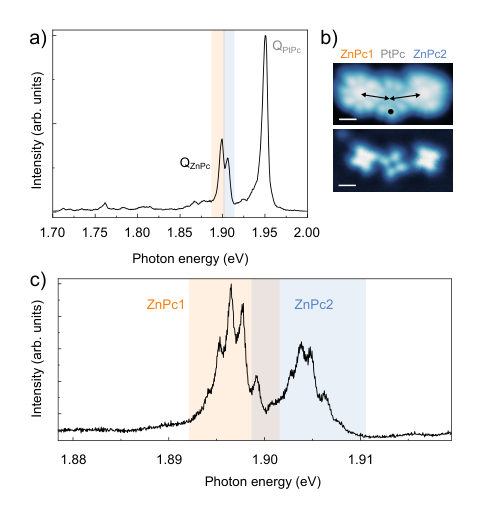
<figcaption class="paper-figure-caption"><b>Fig 4.</b> FIG. 4. Tuning the emission energy in larger assemblies. a) STML wide energy range</figcaption>
</figure>
<figure class="paper-figure-card">

<figcaption class="paper-figure-caption"><b>Fig 5.</b> Fig. 4a shows a low-resolution spectrum recorded on the PtPc. Besides the emission of PtPc</figcaption>
</figure>
</div>

<p><strong>Summary.</strong> The researchers demonstrate that single-molecule fluorescence can be tuned with picometer precision by physically manipulating the surrounding environment using STM. By combining spectroscopy with theoretical modeling, they disentangle how spectral shifts arise from electronic coupling while line shape changes reflect modifications to the molecule's rotational dynamics and energy dissipation pathways.</p>
<p><strong>Why it may be interesting.</strong> This work provides a direct experimental platform for studying environmental coupling effects on quantum emitters, bridging concepts from cavity QED and molecular physics by controlling the local potential landscape at sub-nanometer scales.</p>
<details>
<summary>Detailed structure</summary>
<p><strong>Main problem.</strong> The study investigates how precisely controlled, atomic-scale variations in the local molecular environment affect the fluorescence properties of single molecules.</p>
<p><strong>Main result.</strong> Fluorescence emission energy can be tuned by several tens of meV through environmental control, and spectral line shapes reveal distinct contributions from electronic coupling and modifications to the molecule's rotational dynamics.</p>
<p><strong>Method.</strong> The research combines high-resolution optical spectroscopy with scanning tunneling microscopy (STM) to physically manipulate the intermolecular distance between chromophores.</p>
<p><strong>Model / system.</strong> The system uses phthalocyanine molecules ($ ext{ZnPc}$) whose fluorescence is probed while interacting with a nearby molecule ($   ext{PtPc}$). Theoretical models, such as the quantum harmonic torsional oscillator model and TDDFT, are used to analyze spectral shifts and fine structure changes.</p>
<p><strong>Key observables.</strong> Molecular emission energy (spectral redshift), line profile evolution (fine structure/libronic progressions), and angular displacement ($\Delta\phi$).</p>
<p><strong>Important parameters / regimes.</strong> Intermolecular distance ($d$), controlled with precision better than $100 	ext{ pm}$; spectral shifts up to $\sim 15 	ext{ meV}$.</p>
<p><strong>Assumptions / limitations.</strong> The analysis relies on approximating rotational potentials as parabolas and using remote resonant energy transfer (RET) excitation to minimize artifacts.</p>
<p><strong>Figures summary.</strong> Figures illustrate the progressive redshift and change in peak shape of the $  ext{ZnPc}$ emission spectrum as the distance between molecules decreases, alongside detailed spectral fits showing evolution of libron populations and adsorption angles.</p>
<p><strong>Paper structure.</strong> The paper systematically maps the optical response by varying the separation distance ($d$) using STM/spectroscopy. Analysis progresses from observing simple shifts to fitting complex line shapes using torsional oscillator models, culminating in understanding the physical origins (electronic vs. nuclear) of these changes in larger assemblies.</p>
</details>
<details>
<summary>Abstract</summary>
<p>Molecules that absorb and emit light play a central role in microscopy, light-emitting devices and photosynthesis. Their fluorescence arises from well-defined radiative transitions that are governed by the electronic states and their coupling to the nuclear motion that are influenced by the local environment. Yet the effect of controlled atomic-scale variations in the emitter surroundings remains unexplored. Here, we use scanning tunneling microscopy combined with optical spectroscopy to investigate the optical response of a single phthalocyanine to the change in the position of a nearby molecule, controlled with precision better than 100 pm. Upon decreasing the intermolecular distance, the molecular emission energy redshifts and its line profile evolves. Supported by theoretical calculations, we disentangle the electronic and nuclear contributions to the changes in fluorescence. We find that the redshift originates from the interaction between the excitations of the two molecules, while the lineshape changes reflect modifications of the molecular rotational degree of freedom and non-equilibrium dynamics. We extend this control to larger assemblies, where one molecule tunes the energies of two chromophores, mimicking the environmental tuning in photosynthetic systems. Our study provides atomic-scale insight into how the local environment affects the optical properties of molecular systems.</p>
</details>
<p><sub><a href="#top">↑ back to top</a></sub></p>

<p><a id="paper-2608.14918"></a></p>
<h3 id="solitons-and-periodic-wave-solutions-for-complex-ginzburg-landau-equation-modelling-fiber-lasers-and-nonequilibrium-phenomena"><a href="http://arxiv.org/abs/2608.14918v1">Solitons and periodic wave solutions for complex Ginzburg-Landau equation modelling fiber lasers and nonequilibrium phenomena</a></h3>
<p><strong>Authors:</strong> Vladimir I. Kruglov, Houria Triki<br>
<strong>Type:</strong> theory · <strong>Category:</strong> other · <strong>PDF:</strong> <a href="https://arxiv.org/pdf/2608.14918v1">https://arxiv.org/pdf/2608.14918v1</a><br>
<strong>Analysis basis:</strong> full PDF text, analyzed in chunks
<strong>Topic relevance:</strong> <code>driven-dissipative phase transition</code> <strong>3/5</strong> · <code>methods for driven-dissipative</code> <strong>3/5</strong> · <code>Keldysh / 2PI / non-Gaussian methods</code> <strong>2/5</strong> · <code>correlated / nonlocal dissipation</code> <strong>2/5</strong> · <code>analog quantum simulation</code> <strong>1/5</strong> · <code>interference shaping light</code> <strong>1/5</strong> · <code>non-equilibrium universality</code> <strong>1/5</strong> · <code>superradiant laser</code> <strong>1/5</strong></p>
<div class="figure-strip-hint">↔ Scroll figures horizontally</div>
<div class="paper-figures-scroll">
<figure class="paper-figure-card">
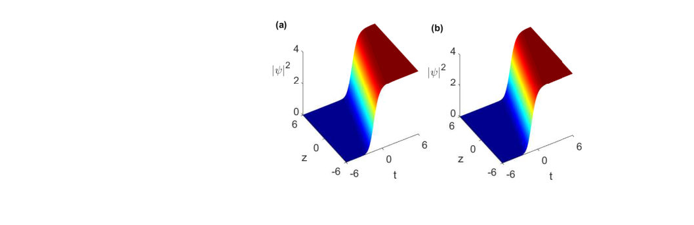
<figcaption class="paper-figure-caption"><b>Fig 1.</b> FIG. 1: Evolution of soliton solutions with parameters α = 0.32, β = 0.35, γ = −0.64, σ = −0.7, δ = 5.434, ξ0 = 0 (a) soliton solution (13) with ν = 1 (b) soliton solution (16) with the −sign of λ when S = 2.</figcaption>
</figure>
<figure class="paper-figure-card">
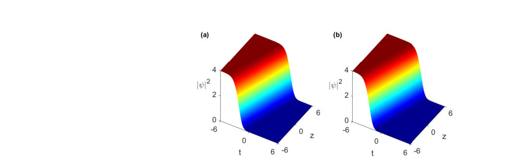
<figcaption class="paper-figure-caption"><b>Fig 2.</b> FIG. 2: Evolution of soliton solutions with parameters α = 0.32, β = 0.35, γ = −0.64, σ = −0.7, δ = 5.434, ξ0 = 0 (a) soliton solution (13) with ν = −1 (b) soliton solution (16) with the + sign of λ when S = 2.</figcaption>
</figure>
<figure class="paper-figure-card">

<figcaption class="paper-figure-caption"><b>Fig 3.</b> FIG. 3: Intensity profiles of kink soliton solution (13) with ν = 1 (dashed line) and kink soliton solution (16) with the −sign of λ (thick line). The other parameters are same as in Fig. 1.</figcaption>
</figure>
<figure class="paper-figure-card">

<figcaption class="paper-figure-caption"><b>Fig 4.</b> FIG. 4: Intensity profiles of kink soliton solution (16) with distinct values of S. The other parameters are same as in Fig. 1(c).</figcaption>
</figure>
<figure class="paper-figure-card">

<figcaption class="paper-figure-caption"><b>Fig 5.</b> FIG. 5: Evolution of periodic wave solutions with parameters α = 0.2, β = 0.1, ξ0 = 0, k = 0.9, u = 0.01 (a) periodic wave solution (26) with γ = −0.4, σ = −0.2, δ = 0.182 (b) periodic wave solution (31) with γ = 0.4, σ = 0.2, δ = −0.182 (c) periodic wave solution (37) with γ = 0.4, σ = 0.2, δ = −0.182.</figcaption>
</figure>
</div>

<p><strong>Summary.</strong> This paper provides an extensive theoretical analysis of wave solutions—including solitons and periodic waves—governed by the complex Ginzburg-Landau equation, relevant for modeling fiber lasers. The authors derive explicit analytical forms for these nonlinear structures using advanced mathematical techniques involving elliptic functions. Crucially, they also perform a stability analysis demonstrating that certain solutions are quasi-stable in passive mode-locking laser systems.</p>
<p><strong>Why it may be interesting.</strong> This work is highly relevant to quantum optics and open quantum systems because the CGLE is a canonical model used to describe amplitude dynamics in nonlinear optical cavities (like lasers), which are often studied in contexts related to quantum noise and dissipation.</p>
<details>
<summary>Detailed structure</summary>
<p><strong>Main problem.</strong> The primary goal is identifying new types of soliton and periodic wave solutions for a nonlinear dissipative medium governed by the complex Ginzburg-Landau equation (CGLE). This applies to modeling phenomena in fiber lasers and general nonequilibrium systems.</p>
<p><strong>Main result.</strong> The authors identified two distinct analytical kink/antikink soliton solutions and demonstrated that various periodic waves, derived using elliptic functions, can exist. Furthermore, they showed that certain solutions are quasi-stable under specific parameter regimes.</p>
<p><strong>Method.</strong> The analysis involves transforming the complex partial differential equation into a single ordinary differential equation (ODE) by seeking traveling wave solutions. Solutions are then found analytically using techniques involving Jacobian elliptic functions and stability analysis based on dispersive wave theory.</p>
<p><strong>Model / system.</strong> The governing model is the cubic complex Ginzburg-Landau equation, which describes pulse propagation in nonlinear dissipative media like fiber lasers. The analysis covers both localized (soliton) and extended (periodic) wave structures within this framework.</p>
<p><strong>Key observables.</strong> Kink/antikink soliton waveforms, periodic wave forms ($    ext{sn},    ext{cn},    ext{dn}$), and the exponential decay rate of dispersive wave intensity ($U(z)^2$).</p>
<p><strong>Important parameters / regimes.</strong> Physical parameters $\alpha, eta, \gamma, \sigma, \delta$, the inverse velocity $u$, and elliptic modulus $k$. Stability depends on conditions like $\delta < 0$ for quasi-stability.</p>
<p><strong>Assumptions / limitations.</strong> The derivation relies on assuming specific forms for traveling waves ($\psi(z, t) = F(\xi) e^{i\dots}$) and making approximations in the stability analysis regarding dispersive wave radiation.</p>
<p><strong>Figures summary.</strong> Figures illustrate the evolution of different soliton solutions (comparing two types of kink solitons) and show the intensity profiles of various periodic wave solutions derived from elliptic functions for specific parameter sets.</p>
<p><strong>Paper structure.</strong> The paper proceeds by deriving a reduced ODE for the amplitude function $F(\xi)$, solving this ODE to find explicit forms for kink/antikink solitons, then analyzing the general case using elliptic functions to derive periodic solutions, and finally performing a stability analysis on these wave types.</p>
</details>
<details>
<summary>Abstract</summary>
<p>New types of soliton and periodic waves are identified for a nonlinear dissipative medium where the pulse propagation is governed by the cubic complex Ginzburg-Landau equation. We find that the dynamical equation for the pulse amplitude supports two distinct types of kink and antikink solitons with different functional forms. It is found that the obtained kink and antikink soliton waveforms occur under the same fixed inverse velocity. The results also indicate that the periodic waves can propagate with variety of wave forms such as sn, cn, dn and their rational forms as well. It is also shown that in the long-wave limit, the derived periodic waves degenerate into different bright and dark soliton pulses. The stability analysis based on the theory of dispersive waves in nonlinear optics is developed. It is shown that some elliptic and soliton solutions are quasi-stable in the context of passive mode locking lasers described by complex Ginzburg-Landau equation.</p>
</details>
<p><sub><a href="#top">↑ back to top</a></sub></p>

<p><a id="paper-2608.16605"></a></p>
<h3 id="five-terminal-quantized-transconductance-originating-from-symmetric-quantum-fluctuations"><a href="http://arxiv.org/abs/2608.16605v1">Five-terminal quantized transconductance originating from symmetric quantum fluctuations</a></h3>
<p><strong>Authors:</strong> Klaiv Mertiri, Yuli V. Nazarov<br>
<strong>Type:</strong> theory · <strong>Category:</strong> other · <strong>PDF:</strong> <a href="https://arxiv.org/pdf/2608.16605v1">https://arxiv.org/pdf/2608.16605v1</a><br>
<strong>Analysis basis:</strong> full PDF text, analyzed in chunks
<strong>Topic relevance:</strong> <code>Keldysh / 2PI / non-Gaussian methods</code> <strong>3/5</strong> · <code>correlated / nonlocal dissipation</code> <strong>3/5</strong> · <code>methods for driven-dissipative</code> <strong>3/5</strong> · <code>driven-dissipative phase transition</code> <strong>2/5</strong> · <code>non-equilibrium universality</code> <strong>1/5</strong> · <code>quantum measurements</code> <strong>1/5</strong></p>
<div class="figure-strip-hint">↔ Scroll figures horizontally</div>
<div class="paper-figures-scroll">
<figure class="paper-figure-card">

<figcaption class="paper-figure-caption"><b>Fig 1.</b> FIG. 1. The setup under consideration. A five-terminal quantum con- tact, characterized by the scattering matrix ˆs, is connected to a time- reversible electromagnetic environment described by the frequency- dependent 5 × 5 symmetric impedance matrix ˆZ(ω). The high- frequency fluctuations in the environment can develop QTC in the contact. To uncouple the contact and environment at very low fre- quencies, which is required for transport measurements, the connec- tion is realized via large capacitors not shown in the figure.</figcaption>
</figure>
<figure class="paper-figure-card">

<figcaption class="paper-figure-caption"><b>Fig 2.</b> FIG. 2. The region of positively defined impedance matrices (gray) overlapped by the region of stability (hatched) for P±1 and P±2 in the space of matrix elements Zi. The stability region corresponds to amplifying Ohmic environments.</figcaption>
</figure>
<figure class="paper-figure-card">

<figcaption class="paper-figure-caption"><b>Fig 3.</b> FIG. 4. Three setups proposed to demonstrate the QTC fixed points are built from beam splitters forming loops. Gray polygons represent the terminals, lines represent the propagation channels, and black n −th order polygons represent the beam splitters, corresponding to a unitary n × n matrix. In the Starfish setup, electrons follow the loop unless exiting to the terminals underway. In the Football setup, the central beam splitter provides more chances to explore the loops. The beam splitters in the Resonator have a low entrance transparency, this is indicated by crosses. If a resonance condition is achieved, this guarantees electron trapping in the loop, so that it can explore all terminals.</figcaption>
</figure>
<figure class="paper-figure-card">

<figcaption class="paper-figure-caption"><b>Fig 4.</b> FIG. 3. Implementation of the electromagnetic environment. Gen- eral design. In each of the 5 loops labeled by α, the self inductances of the ideal transformers Miα, Liα are chosen to correspond to ψ(α) i , an eigenvector of ˆz. The resistor Rα gives the corresponding eigen- value. A cyclically symmetric Ohmic environment is obtained when ψ(α) i correspond to Fourier modes, and R1 = R4, R2 = R3.</figcaption>
</figure>
<figure class="paper-figure-card">

<figcaption class="paper-figure-caption"><b>Fig 5.</b> FIG. 6. The Football setup. Convergence diagram. Plots (a) and (c) show the convergence regions to P±1 (black and white) for the environment E1 , while plots (b) and (d) show this for P±2 and envi- ronment E2. In plots (a) and (b) we tune the flux and all dynamical phases χ(0) i ≡χ, with χ(1) i = 0, while in plots (c) and (d) we tune the flux and the dynamical phase of one channel, χ(0) 0 ≡χ, with χ(0) i̸=0 = −π/3, χ(1) i = −π/2.</figcaption>
</figure>
</div>

<p><strong>Summary.</strong> This paper theoretically demonstrates that symmetric quantum fluctuations in an external environment can induce quantized transconductance in five-terminal quantum contacts. Using a renormalization group approach, the authors show that stable fixed points exist only when there are at least five terminals. The phenomenon is physically realized by proposing specific engineered circuit geometries using beam splitters.</p>
<p><strong>Why it may be interesting.</strong> This work connects mesoscopic transport phenomena with fundamental concepts of quantum fluctuations and renormalization flow, providing a mechanism for quantization beyond standard symmetry arguments.</p>
<details>
<summary>Detailed structure</summary>
<p><strong>Main problem.</strong> The authors demonstrate that quantized transconductance (QTC) can emerge in five-terminal quantum contacts due to the renormalization effects of symmetric quantum fluctuations from an external electromagnetic environment.</p>
<p><strong>Main result.</strong> QTC is possible in time-reversible environments if there are at least five terminals, leading to stable fixed points ($P_{\pm 1}, P_{\pm 2}$) in the renormalization flow. This mechanism requires careful engineering of the initial scattering state.</p>
<p><strong>Method.</strong> The analysis employs a renormalization group approach by solving an effective flow equation for the energy-dependent scattering amplitudes ($\hat{s}_{ij}$), analyzing fixed points, and simulating convergence using various physical setups.</p>
<p><strong>Model / system.</strong> The system is modeled as a five-terminal quantum contact coupled to a symmetric Ohmic environment. Physical realizations are proposed using 2DEG in semiconductor heterostructures configured into loops (Starfish, Football, Resonator) connected via beam splitters.</p>
<p><strong>Key observables.</strong> Quantized transconductance (QTC), stable fixed points ($P_{\pm 1}, P_{\pm 2}$), and the convergence of transmission coefficients towards these quantized values.</p>
<p><strong>Important parameters / regimes.</strong> The number of terminals ($\ge 5$), the symmetry of the environment, magnetic flux ($\Phi$), dynamical phases ($\chi_i$), and the small coupling strength ($z$).</p>
<p><strong>Assumptions / limitations.</strong> The analysis assumes an Ohmic environment and relies on engineering the initial scattering matrix to achieve flow towards the stable fixed points.</p>
<p><strong>Figures summary.</strong> Figures illustrate the five-terminal setup, proposed circuit implementations (Starfish, Football, Resonator), and convergence diagrams showing how transmission coefficients flow toward quantized values ($P_{\pm 1}$ or $P_{\pm 2}$) near specific resonance crossings.</p>
<p><strong>Paper structure.</strong> The paper first establishes the theoretical framework using renormalization group equations for five-terminal contacts. It then proposes concrete physical realizations in semiconductor structures, analyzing convergence diagrams based on varying magnetic flux and dynamical phases relative to level crossings (A, B, C).</p>
</details>
<details>
<summary>Abstract</summary>
<p>We consider the renormalization of transport in a quantum contact by the external electromagnetic environment and show that weak quantum fluctuations from a symmetric environment can lead to a quantized transconductance in five-terminal contacts. This mechanism does not work for fewer terminals. We present an implementation of the environment and investigate several example quantum contacts where the quantization takes place.</p>
</details>
<p><sub><a href="#top">↑ back to top</a></sub></p>

<p><a id="paper-2608.16414"></a></p>
<h3 id="field-controlled-breaking-and-restoration-of-parity-time-symmetry-in-josephson-interference"><a href="http://arxiv.org/abs/2608.16414v1">Field-controlled breaking and restoration of parity-time symmetry in Josephson interference</a></h3>
<p><strong>Authors:</strong> Yi-Chen Tsai, Yung-Yeh Chang, Tao-Yi Hsu, Thomas Kuo, Chia-Nung Kuo, Chin-Shan Lue, Kuei-Lin Chiu, Chen-Hsuan Hsu, Chung-Ting Ke<br>
<strong>Type:</strong> both · <strong>Category:</strong> other · <strong>PDF:</strong> <a href="https://arxiv.org/pdf/2608.16414v1">https://arxiv.org/pdf/2608.16414v1</a><br>
<strong>Analysis basis:</strong> full PDF text, analyzed in chunks
<strong>Topic relevance:</strong> <code>driven-dissipative phase transition</code> <strong>3/5</strong> · <code>interference shaping light</code> <strong>3/5</strong> · <code>non-equilibrium universality</code> <strong>2/5</strong> · <code>Keldysh / 2PI / non-Gaussian methods</code> <strong>1/5</strong> · <code>correlated / nonlocal dissipation</code> <strong>1/5</strong> · <code>methods for driven-dissipative</code> <strong>1/5</strong> · <code>quantum measurements</code> <strong>1/5</strong></p>
<div class="figure-strip-hint">↔ Scroll figures horizontally</div>
<div class="paper-figures-scroll">
<figure class="paper-figure-card">

<figcaption class="paper-figure-caption"><b>Fig 1.</b> Figure 1: Measurement setup of Josephson interference and microscopic origin of the asymmetry. (a) Differential resistance dV/dI as a function of Bz and bias current, measured in the absence of an in-plane field. The symmetric Fraunhofer interference pattern, with well-defined central and side lobes, is consistent with an approximately uniform supercurrent distribution across the junction. Inset: optical image of the NbTi/PtTe2/NbTi JJs with the measurement configuration overlaid. (b) Interference patterns measured at Bin = 40 mT for I+ at θ = 0◦and I−at θ = 180◦, where I± denote the positive and negative current directions, respectively. Upon reversal of Bz, the two profiles map onto one...</figcaption>
</figure>
<figure class="paper-figure-card">

<figcaption class="paper-figure-caption"><b>Fig 2.</b> Figure 2: Symmetry-selective analysis of Josephson interference by in-plane-field rotation. (a) Critical-current interference patterns measured at a fixed in-plane field magnitude Bin = 40 mT while rotating its orientation θ. The side-lobe asymmetry reverses between θ = 0◦and 180◦, whereas the patterns become nearly symmetric at θ = 90◦and 270◦. (b) Representative dV/dI map. Inset: extraction of the first-side-lobe difference Idiff and the central-lobe maximum Imax. (c,d) Angular de- pendences of the experimentally extracted quantities for Bin = 30 mT and 40 mT. (c) The magnitude |Idiff| exhibits a two-fold angular dependence and is largest when the in-plane field is parallel or antipar-...</figcaption>
</figure>
<figure class="paper-figure-card">

<figcaption class="paper-figure-caption"><b>Fig 3.</b> Figure 3: Orientation-selective restoration of symmetric Josephson interference. (a,b) In- terference patterns measured at several in-plane field strengths. (a) For an in-plane field parallel to the current (θ = 0◦), the side-lobe asymmetry increases with Bin, accompanied by suppression of the central lobe and an eventual evolution towards a SQUID-like pattern. (b) For an in-plane field per- pendicular to the current (θ = 90◦), the interference pattern remains essentially symmetric over the measured field range, demonstrating the robust restoration of the PT -symmetric Fraunhofer response despite a finite Bin. (c,d) Calculated interference patterns I(ϕz) as a function of the perpendicular...</figcaption>
</figure>
<figure class="paper-figure-card">

<figcaption class="paper-figure-caption"><b>Fig 4.</b> Figure 4: Field-current symmetry map of Josephson interference. (a) Field-current symme- try map constructed from the supercurrent interference patterns. The two in-plane-field components define continuous field coordinates, whereas I+ and I−form two discrete current sectors. The con- figurations at θ = 90◦and 270◦define PT -invariant boundaries. Away from these boundaries, PT symmetry is broken, while symmetry-related configurations remain connected by the generalized T operation. (b) Interference patterns measured along a PT -invariant boundary. A symmetric Fraun- hofer response is recovered over a broad range of in-plane fields despite a finite Bin. (c) Representative off-axis...</figcaption>
</figure>
</div>

<p><strong>Summary.</strong> This paper reports on field-controlled symmetry switching in Josephson junctions by applying an in-plane magnetic field. By analyzing the resulting supercurrent interference patterns, the authors demonstrate that the device can be tuned between states exhibiting broken and restored Parity-Time ($\mathcal{PT}$) symmetry. This control is attributed to a microscopic mechanism involving flux dipoles interacting with disorder.</p>
<p><strong>Why it may be interesting.</strong> This work demonstrates active control over fundamental quantum symmetries in superconducting devices using external fields, providing a platform for engineering coherent transport properties relevant to topological or non-Hermitian physics.</p>
<details>
<summary>Detailed structure</summary>
<p><strong>Main problem.</strong> The study investigates how applying an in-plane magnetic field can control the symmetry (Parity, Time-reversal, or combined PT) of supercurrent interference patterns in Josephson junctions.</p>
<p><strong>Main result.</strong> The geometry of the applied magnetic field and current allows for reconfigurable switching between symmetry-broken and symmetry-restored interference states. Specifically, an in-plane field perpendicular to the current restores the PT-symmetric Fraunhofer response.</p>
<p><strong>Method.</strong> The authors combine experimental measurements of supercurrent interference patterns with a microscopic model incorporating flux dipoles generated by the in-plane field and disorder effects.</p>
<p><strong>Model / system.</strong> The physical platform is lateral NbTi/PtTe2/NbTi Josephson junctions. The theoretical framework models the critical current amplitude using contributions from left, middle, and right interface regions due to flux focusing.</p>
<p><strong>Key observables.</strong> Supercurrent interference patterns, side-lobe asymmetry ($A_n$), Fraunhofer pattern symmetry, and generalized T-symmetry relations.</p>
<p><strong>Important parameters / regimes.</strong> In-plane magnetic field magnitude ($B_{	ext{in}}$), its orientation ($    heta$) relative to the current, and the out-of-plane magnetic field ($B_z$).</p>
<p><strong>Assumptions / limitations.</strong> The analysis relies on a linear expansion approximation for small flux dipole contributions and assumes that disorder creates local potential variations.</p>
<p><strong>Figures summary.</strong> Figures illustrate the transition from symmetric (Fraunhofer) to asymmetric interference patterns based on $   heta$, showing maximum asymmetry when $B_{	ext{in}}$ is parallel/antiparallel to current, and restoration of symmetry when perpendicular.</p>
<p><strong>Paper structure.</strong> The paper systematically analyzes how different field configurations ($\mathbf{B}_{	ext{in}}$ orientation) probe specific symmetries (P, T, PT), develops a microscopic model linking asymmetry to flux dipoles, and confirms the scaling laws governing this control.</p>
</details>
<details>
<summary>Abstract</summary>
<p>Symmetry plays a fundamental role in determining the phases and physical properties of quantum matter. Controlling symmetry in mesoscopic superconducting devices provides a route to reconfigure their phase-coherent transport. Here we demonstrate symmetry-selective Josephson interferometry in lateral NbTi/PtTe2/NbTi junctions by controlling the relative orientations of the current and magnetic field. From the supercurrent interference patterns, we construct a field-current symmetry map that identifies configurations exhibiting or violating the device-level parity (\mathcal{P}), time-reversal (\mathcal{T}) and their combined \mathcal{P}\mathcal{T} symmetry. In the absence of an in-plane field, the junction exhibits a symmetric Fraunhofer pattern. An in-plane field parallel to the current produces a pronounced side-lobe asymmetry, whereas reversing both the current and the complete magnetic-field configuration restores a generalized \mathcal{T} relation. Remarkably, orienting the in-plane field perpendicular to the current restores the \mathcal{P}\mathcal{T}-symmetric Fraunhofer response even at substantial field strengths. A microscopic model attributes this behavior to the interplay between disorder-induced potential variations and flux dipoles generated by in-plane-field Meissner focusing near the superconducting electrodes. Our results establish a reconfigurable Josephson interferometer in which the field-current geometry selects the symmetry operation being probed and switches the device between symmetry-broken and symmetry-restored interference states.</p>
</details>
<p><sub><a href="#top">↑ back to top</a></sub></p>

<p><a id="paper-2608.14949"></a></p>
<h3 id="anharmonicity-and-nonadiabaticity-in-hydride-superconductors"><a href="http://arxiv.org/abs/2608.14949v1">Anharmonicity and Nonadiabaticity in Hydride Superconductors</a></h3>
<p><strong>Authors:</strong> Shashi B. Mishra, Francesco Belli, Eva Zurek, Elena R. Margine<br>
<strong>Type:</strong> theory · <strong>Category:</strong> other · <strong>PDF:</strong> <a href="https://arxiv.org/pdf/2608.14949v1">https://arxiv.org/pdf/2608.14949v1</a><br>
<strong>Analysis basis:</strong> full PDF text, analyzed in chunks
<strong>Topic relevance:</strong> <code>Keldysh / 2PI / non-Gaussian methods</code> <strong>3/5</strong> · <code>driven-dissipative phase transition</code> <strong>2/5</strong> · <code>methods for driven-dissipative</code> <strong>2/5</strong> · <code>analog quantum simulation</code> <strong>1/5</strong> · <code>correlated / nonlocal dissipation</code> <strong>1/5</strong> · <code>non-equilibrium universality</code> <strong>1/5</strong> · <code>quantum measurements</code> <strong>1/5</strong></p>
<div class="figure-strip-hint">↔ Scroll figures horizontally</div>
<div class="paper-figures-scroll">
<figure class="paper-figure-card">

<figcaption class="paper-figure-caption"><b>Fig 1.</b> FIG. 1. (a) Crystal structures of the hydrides studied here, labeled with pressure (P) and the quantum-corrected SSCHA pressure ( ˜P). Small white spheres denote H; large spheres de- note S (yellow), Y (dark green), La (light green), Be (orange), and Pd (blue). (b) Electronic density of states, with εF indi- cated by the dashed line.</figcaption>
</figure>
<figure class="paper-figure-card">

<figcaption class="paper-figure-caption"><b>Fig 2.</b> FIG. 2. Eliashberg and superconducting properties of YH6 (left) and YH9 (right). (a,b) Eliashberg spectral function, α2F(ω), (solid lines) and cumulative e-ph coupling λ(ω) (dashed lines) for harmonic (black) and anharmonic (red) phonons. (c,d) Corresponding vertex spectral functions, α2F V (ω, ω′) and integrated nonadiabatic couplings λV . (e,f) Isotropic superconducting gap ∆(T) obtained from adiabatic and nonadiabatic calculations with anharmonic phonons, with the experimental Tc values indicated by dashed vertical lines.</figcaption>
</figure>
<figure class="paper-figure-card">

<figcaption class="paper-figure-caption"><b>Fig 3.</b> FIG. 3. (a) Eliashberg spectral function α2F(ω) (solid) and cumulative λ(ω) (dashed), and (b) superconducting gap ∆(T) for anharmonic phonons in PdH, PdD, and PdT.</figcaption>
</figure>
<figure class="paper-figure-card">

<figcaption class="paper-figure-caption"><b>Fig 4.</b> FIG. 4. (a) Superconducting Tc obtained from isotropic FBW Eliashberg theory using harmonic (blue) and anhar- monic (red) phonons, without (open circles) and with (filled diamonds) first-order vertex corrections, compared with ex- periment (stars). The corresponding numerical values are listed in Table I. (b) Classification of the hydrides according to the anharmonic renormalization Aλ and the vertex ratio RV ; the dotted lines are guides to the eye delineating the dif- ferent regimes.</figcaption>
</figure>
</div>

<p><strong>Summary.</strong> This paper investigates superconducting properties in hydrides by incorporating anharmonic phonon effects and nonadiabatic vertex corrections into Eliashberg theory. The authors introduce diagnostics, such as the anharmonic renormalization factor $A_\lambda$ and vertex ratio $R_V$, to guide researchers on when simple theoretical models break down. By applying these advanced methods, they achieve better agreement with experimental critical temperatures for several high-pressure superconductors.</p>
<p><strong>Why it may be interesting.</strong> While focused on condensed matter superconductivity, the rigorous development and application of advanced many-body perturbation theory (Eliashberg formalism) and the introduction of material-specific diagnostic criteria ($A_\lambda$, $R_V$) for theoretical model selection are highly relevant to open quantum systems.</p>
<details>
<summary>Detailed structure</summary>
<p><strong>Main problem.</strong> The study aims to determine when advanced theoretical treatments beyond standard harmonic, adiabatic Migdal-Eliashberg theory are necessary for accurately describing superconductivity in various hydride materials.</p>
<p><strong>Main result.</strong> The authors successfully applied anharmonic and nonadiabatic corrections to predict superconducting critical temperatures ($T_c$) for several hydrides, showing that these effects are crucial for matching experimental values.</p>
<p><strong>Method.</strong> They employed full-bandwidth Eliashberg theory combined with density-functional theory (DFT) calculations incorporating anharmonic phonon renormalization and electron-phonon vertex corrections.</p>
<p><strong>Model / system.</strong> The research focuses on superconductivity in high-pressure binary hydrides ($   ext{H}_3    ext{S}$, $  ext{YH}_6$, $   ext{YH}_9$) and ambient-pressure Pd hydride series, using advanced phonon calculations (ML/SSCHA).</p>
<p><strong>Key observables.</strong> Critical Temperature ($T_c$), electron-phonon coupling constants ($\lambda_{	ext{anh}}$, $\lambda_{	ext{har}}$), anharmonic renormalization diagnostic ($A_\lambda$), and vertex ratio ($R_V$).</p>
<p><strong>Important parameters / regimes.</strong> The adiabaticity ratio ($\eta$) is key for distinguishing between regimes, with small values suggesting the breakdown of Migdal's approximation.</p>
<p><strong>Assumptions / limitations.</strong> The central theme involves testing the limits of approximations: moving beyond harmonic lattice dynamics (anharmonicity) and accounting for vertex corrections (nonadiabaticity).</p>
<p><strong>Figures summary.</strong> Figures compare calculated $T_c$ values across different theoretical treatments (harmonic vs. anharmonic + vertex) against experimental data for various hydrides.</p>
<p><strong>Paper structure.</strong> The paper systematically analyzes several material classes, introducing diagnostics ($A_\lambda$, $R_V$) to classify the required level of theory—from simple harmonic models up to full nonadiabatic corrections.</p>
</details>
<details>
<summary>Abstract</summary>
<p>We study superconductivity in representative hydrides using anharmonic phonons, electron-phonon vertex corrections, and full-bandwidth Eliashberg theory. The high-pressure binary hydrides H3S, YH6, and YH9 must be treated with both anharmonic and nonadiabatic corrections, whereas the ambient-pressure PdH/PdD/PdT series is strongly anharmonic but remains adiabatic, reproducing the inverse isotope effect without sizable vertex contributions. LaBeH8 exhibits weak anharmonicity, while vertex corrections reduce the critical temperature (Tc) by approximately 4 K, leaving the predicted Tc above experiment. To identify when treatments beyond harmonic, adiabatic Migdal-Eliashberg theory are required, we introduce the anharmonic renormalization $A_λ$ and the vertex ratio $R_{V}$ as material-specific diagnostics.</p>
</details>
<p><sub><a href="#top">↑ back to top</a></sub></p>

<p><a id="paper-2608.16505"></a></p>
<h3 id="plexciton-mediated-raman-scattering-in-strongly-coupled-systems"><a href="http://arxiv.org/abs/2608.16505v1">Plexciton-mediated Raman scattering in strongly coupled systems</a></h3>
<p><strong>Authors:</strong> Danyang Liu, Meijuan Sun, Li Chen, Hao Shen<br>
<strong>Type:</strong> theory · <strong>Category:</strong> other · <strong>PDF:</strong> <a href="https://arxiv.org/pdf/2608.16505v1">https://arxiv.org/pdf/2608.16505v1</a><br>
<strong>Analysis basis:</strong> full PDF text, analyzed in chunks
<strong>Topic relevance:</strong> <code>Keldysh / 2PI / non-Gaussian methods</code> <strong>3/5</strong> · <code>analog quantum simulation</code> <strong>2/5</strong> · <code>correlated / nonlocal dissipation</code> <strong>2/5</strong> · <code>Tavis-Cummings &amp; cavity-many-emitter</code> <strong>1/5</strong> · <code>driven-dissipative phase transition</code> <strong>1/5</strong> · <code>interference shaping light</code> <strong>1/5</strong> · <code>methods for driven-dissipative</code> <strong>1/5</strong></p>
<div class="figure-strip-hint">↔ Scroll figures horizontally</div>
<div class="paper-figures-scroll">
<figure class="paper-figure-card">

<figcaption class="paper-figure-caption"><b>Fig 1.</b> FIG. 1: Normalized plasmon dispersion relation. In the study of strong coupling systems using nanoparticle-on- mirror (NPoM) microcavities [48], the metallic nanopar- ticle supports the plasmons, while the two-dimensional material within the cavity provides the excitons. Experi- mentally, by precisely tailoring the geometric dimensions of the metallic nanoparticle, one can effectively tune the plasmonic resonance wavevector, thereby selecting a spe- cific plasmonic mode to participate in the strong cou- pling. In contrast, the exciton energy of the material is typically fixed, taking monolayer molybdenum disulfide (MoS2) as an example, its exciton resonance energy is fixed at 1.81 eV [49],...</figcaption>
</figure>
<figure class="paper-figure-card">

<figcaption class="paper-figure-caption"><b>Fig 2.</b> FIG. 2: Infinite series of Feynman diagrams corre- sponding to the RPA for density-density response func- tion. In Figure (a) The leading-order term, represented by a closed bubble diagram, corresponds to the non- interacting response function. Subsequent terms consist of polarization bubbles connected by wavy lines repre- senting the Coulomb potential. This self-consistent sum- mation of infinite-order ring diagrams physically charac- terizes the collective excitations emerging from dynam- ical screening effects. In Figure (b), this framework is extended to a composite coupled system, where the introduction of exciton polarization modifies the bare Coulomb interaction to construct the...</figcaption>
</figure>
<figure class="paper-figure-card">

<figcaption class="paper-figure-caption"><b>Fig 3.</b> FIG. 3: Plasmon-exciton polariton dispersion relation. The variation of the upper and lower polariton branch energies as a function of detuning. The blue solid lines represent the two polariton branches, the pink dashed line indicates the exciton energy, and the blue dashed line shows the plasmon dispersion. The red dots denote our simulation results. The polariton branches exhibit clear anticrossing characteristics, reflecting the strong coupling between the exciton and the plasmon.</figcaption>
</figure>
<figure class="paper-figure-card">

<figcaption class="paper-figure-caption"><b>Fig 4.</b> FIG. 5: Raman enhancement factors of phonon modes. The phonon peak of the E′ mode is at 388 cm−1, cor- responding to an energy of 48.11 meV. Fitting yields the widths of the upper and lower branch polaritons as 25.93 meV and 231.44 meV, respectively, with g = 0.2. For the A′ 1 mode (408 cm−1, 50.59 meV), the widths of its upper and lower branch polaritons are 25.58 meV and 206.42 meV, (g = 0.18). For the 2LA mode (460 cm−1, 57.04 meV), the widths of its upper and lower branch polaritons are 18.41 meV and 175.85 meV (g = 0.1).</figcaption>
</figure>
<figure class="paper-figure-card">

<figcaption class="paper-figure-caption"><b>Fig 5.</b> FIG. 6: Width of Upper and Lower Branch Polarons. When the imaginary part of the response function is taken into account, the widths of the polaritons are as shown in the figure. The widths of the upper and lower polaritons differ by a factor of ten. The width of the upper branch polariton is much smaller than that of the lower branch polariton.</figcaption>
</figure>
</div>

<p><strong>Summary.</strong> This paper develops a rigorous quantum many-body theory approach to explain Raman scattering in plasmon-exciton coupled materials. By treating the system's collective excitations as polaritons, it derives analytical expressions that accurately predict spectral features like enhancement factors and linewidth asymmetries. This establishes a versatile framework for understanding dynamical interactions between light, matter, and lattice vibrations.</p>
<p><strong>Why it may be interesting.</strong> This work is highly relevant as it develops a universal quantum mechanical framework for analyzing coupled light-matter systems (plasmons/excitons) interacting with lattice vibrations (phonons), which is central to advanced quantum optics and condensed matter spectroscopy.</p>
<details>
<summary>Detailed structure</summary>
<p><strong>Main problem.</strong> The paper aims to microscopically describe the Raman scattering process occurring in strongly coupled plasmon-exciton systems, moving beyond conventional electron-phonon interaction models.</p>
<p><strong>Main result.</strong> They derive analytical expressions showing that the enhanced Raman scattering is mediated by inelastic scattering involving polaritons (plasmon-exciton quasiparticles), and they provide a mechanism explaining the observed asymmetry in polariton linewidths.</p>
<p><strong>Method.</strong> The work employs quantum many-body theory, specifically linear response theory, to calculate the system's total response function and derive coupled excitation dispersions.</p>
<p><strong>Model / system.</strong> The physical system is strongly coupled plasmon-exciton systems (plexcitons), modeled using concepts like the dielectric function ($\epsilon_{eff}$) derived from density-density response functions. The theory builds upon understanding collective electronic oscillations (plasmons) and bound electron-hole pairs (excitons).</p>
<p><strong>Key observables.</strong> Raman intensity and enhancement factors, polariton dispersion curves ($\omega_{pol\pm}$), and the intrinsic linewidths/damping rates of the upper and lower polariton branches.</p>
<p><strong>Important parameters / regimes.</strong> Plasmon frequency ($\omega_p$), exciton frequency ($\omega_{	ext{ex}}$), wavevector ($q$), detuning ($\delta = \omega_{pl} - \omega_{ex}$), and system geometry parameters.</p>
<p><strong>Assumptions / limitations.</strong> The analysis relies on linear response theory, approximations like the Random Phase Approximation (RPA) for non-interacting responses, and Taylor expansions when analyzing linewidths near resonance.</p>
<p><strong>Figures summary.</strong> Figures illustrate the normalized plasmon dispersion relation, Feynman diagrams detailing the construction of coupled response functions, and the resulting polariton dispersion as a function of detuning.</p>
<p><strong>Paper structure.</strong> The paper progresses from establishing the need for a microscopic theory to model Raman scattering in these systems. It then details the theoretical framework using linear response theory to derive the effective dielectric function, solve for the plasmon-exciton polariton dispersions, and finally applies this formalism to calculate the phonon-polariton scattering process.</p>
</details>
<details>
<summary>Abstract</summary>
<p>A series of experimental results demonstrate a distinctive Raman response in plasmon-exciton coupled systems. The enhancement of Raman scattering varies for different phonon modes. We describe the microscopic dynamical process of this Raman scattering using quantum many-body theory. Unlike conventional Raman scattering involving electron-phonon interactions, the process in plasmon-exciton coupled systems is characterized by inelastic scattering between phonons and plasmon-exciton polaritons-formed through the coupling of plasmons and excitons-acting as intermediate states. We derive analytical expressions for the Raman intensity and enhancement factors for various phonon modes, which show excellent agreement with experimental data. Furthermore, experimental fittings indicate a substantial disparity in the linewidths of the upper and lower polariton branches, for which we provide a comprehensive theoretical explanation. Based on linear response theory, we propose a microscopic mechanism for the formation of plasmon-exciton polaritons, enabling the analytical calculation of their dispersions and linewidths. This approach naturally accounts for the significantly asymmetry observed in the linewidths of the upper and lower polariton branches. By characterizing the polariton-phonon scattering process at the quantum level, we reveal the fundamental physical mechanism driving polariton-enhanced Raman scattering. Our work establishes a universal framework for describing the dynamical evolution of coupled systems, providing a versatile paradigm for exploring the interactions between plasmons and other quasiparticles.</p>
</details>
<p><sub><a href="#top">↑ back to top</a></sub></p>

<p><a id="paper-2608.15368"></a></p>
<h3 id="proposal-of-a-consistent-value-for-the-mean-excitation-energy-of-liquid-water-using-advanced-modeling-detailed-simulations-and-precission-proton-bragg-curves"><a href="http://arxiv.org/abs/2608.15368v1">Proposal of a consistent value for the mean excitation energy of liquid water using advanced modeling, detailed simulations and precission proton Bragg curves</a></h3>
<p><strong>Authors:</strong> Pablo de Vera, Isabel Abril, Flávio Matias, Julian M. B. Shorto, Hélio Yoriyaz, Rafael Garcia-Molina<br>
<strong>Type:</strong> both · <strong>Category:</strong> other · <strong>PDF:</strong> <a href="https://arxiv.org/pdf/2608.15368v1">https://arxiv.org/pdf/2608.15368v1</a><br>
<strong>Analysis basis:</strong> full PDF text, analyzed in chunks
<strong>Topic relevance:</strong> <code>Keldysh / 2PI / non-Gaussian methods</code> <strong>3/5</strong> · <code>driven-dissipative phase transition</code> <strong>2/5</strong> · <code>methods for driven-dissipative</code> <strong>2/5</strong> · <code>correlated / nonlocal dissipation</code> <strong>1/5</strong> · <code>quantum measurements</code> <strong>1/5</strong></p>
<div class="figure-strip-hint">↔ Scroll figures horizontally</div>
<div class="paper-figures-scroll">
<figure class="paper-figure-card">

<figcaption class="paper-figure-caption"><b>Fig 1.</b> FIG. 1. Mass stopping power of water for protons. (a) Calcu- lations for liquid water (lines) are compared to experimental data (open symbols: liquid water; full symbols: amorphous ice) over a wide energy range. (b) Zoom around transmission measurements in liquid water at large energies, together with results of the Bethe equation for different I-values.</figcaption>
</figure>
<figure class="paper-figure-card">

<figcaption class="paper-figure-caption"><b>Fig 2.</b> FIG. 2. Simulated depth-dose curves for low-energy proton beams of (a) 1 MeV, (b) 10 MeV, and (c) 50 MeV, using different stopping power models. The value of I = 79.4 eV is used in all simulations, except for the green dot-dashed curve in panel (c), which uses I = 75.0 eV.</figcaption>
</figure>
<figure class="paper-figure-card">

<figcaption class="paper-figure-caption"><b>Fig 3.</b> FIG. 3. Comparison of simulated (lines) and measured (symbols) depth-dose curves for proton beams of different therapeutic energies. Lines depict simulations using different I-values. The two open triangles in the left panels represent the positions of the dose maximum and the range (defined as 80% of the dose maximum at the distal part), respectively, as measured by Schardt et al. [7]. Error bars in open circles represent the uncertainty in the depths measured by Kumazaki et al. [6].</figcaption>
</figure>
<figure class="paper-figure-card">

<figcaption class="paper-figure-caption"><b>Fig 4.</b> FIG. 4. (a) Absolute errors for the simulated proton ranges in liquid water, with respect to experimental measurements, for the largest and lowest I-values used in simulations. (b) Figure of merit, as defined by Eq. (17), obtained using differ- ent reasonable I-values for liquid water.</figcaption>
</figure>
<figure class="paper-figure-card">

<figcaption class="paper-figure-caption"><b>Fig 5.</b> Figure 4(b) depicts the results of this figure of merit for each of the plausible I-values studied. Negative values denote a global underestimation in the simulations of the measured depths for a particular I-value, while positive values denote a global overestimation. As can be seen, out of the I-values studied, that of 79.4 eV arising from the MELF-GOS method (and supported by the TDDFT- Penn approach) provides the figure of merit closest to 0,</figcaption>
</figure>
</div>

<p><strong>Summary.</strong> This paper tackles the critical problem of determining the mean excitation energy ($I$) for liquid water, essential for accurate proton therapy dose planning. The authors use a combination of advanced theoretical modeling (MELF-GOS, TDDFT-Penn) and detailed simulations to calculate stopping power across wide energy ranges. They conclude that $I = 79.4 	ext{ eV}$ provides the most consistent value matching both theory and experimental Bragg curve measurements.</p>
<p><strong>Why it may be interesting.</strong> While the core physics is in condensed matter/radiation dosimetry, the reliance on advanced quantum mechanical methods like TDDFT and dielectric formalism for calculating energy loss functions connects conceptually to open quantum systems theory and response functions.</p>
<details>
<summary>Detailed structure</summary>
<p><strong>Main problem.</strong> The primary goal is establishing a consistent, reliable value for the mean excitation energy ($I$) of liquid water, which is critical for accurately predicting proton stopping power in medical physics applications like protontherapy.</p>
<p><strong>Main result.</strong> By combining advanced theoretical models (MELF-GOS and TDDFT-Penn) with detailed simulations of proton Bragg curves, the authors converge on a consistent value of $I = 79.4 	ext{ eV}$ for liquid water.</p>
<p><strong>Method.</strong> The study employs complementary theoretical methods—the perturbative MELF-GOS approach and the non-perturbative TDDFT-Penn method—to calculate stopping power ($dE/dx$) across various proton energies, which are then used in SEICS simulations to generate Bragg curves.</p>
<p><strong>Model / system.</strong> The physical system is liquid water ($  ext{H}_2    ext{O}$), treated as the primary medium for high-energy proton beams. The analysis relies on dielectric formalism and time-dependent density functional theory (TDDFT) to model energy loss mechanisms.</p>
<p><strong>Key observables.</strong> Stopping power ($dE/dx$), Mean Excitation Energy ($I$), and simulated/measured Proton Bragg curves (depth-dose profiles).</p>
<p><strong>Important parameters / regimes.</strong> Proton beam energies ranging from $1$ to $230 	ext{ MeV}$; the derived value of $I = 79.4 	ext{ eV}$.</p>
<p><strong>Assumptions / limitations.</strong> The theoretical models assume that the stopping power can be accurately calculated using dielectric response functions, although limitations exist for very low energies where perturbative methods fail.</p>
<p><strong>Figures summary.</strong> Figures compare simulated mass stopping power (MELF-GOS vs. TDDFT-Penn) against experimental data for liquid water and amorphous ice; another figure analyzes the Figure of Merit ($   ext{FoM}$) across various assumed $I$-values, highlighting $79.4 	ext{ eV}$ as optimal.</p>
<p><strong>Paper structure.</strong> The paper progresses by first establishing the necessity of accurate stopping power due to protontherapy needs, then detailing two complementary theoretical calculation methods (MELF-GOS and TDDFT-Penn), followed by applying these calculations to simulate Bragg curves, and finally using a Figure of Merit analysis on experimental data to confirm $I=79.4 	ext{ eV}$.</p>
</details>
<details>
<summary>Abstract</summary>
<p>Protontherapy precision depends on accurately knowing the stopping power of liquid water, as it is the most abundant component of soft body tissues. Difficulties when working with volatile liquids have led to a long-standing debate regarding the values of the stopping power and the mean excitation energy $I$ of liquid water. The equivalence between the stopping power of liquid water and amorphous ice per unit mass density across all clinically relevant proton energies opens the possibility to obtain a reliable estimation of the $I$-value of liquid water. In this work, we employ two complementary theoretical methodologies to assess the proton stopping power of water. The MELF-GOS (Mermin Energy Loss Function - Generalized Oscillator Strengths) approach, based on the perturbative dielectric formalism, serves as an accurate reference for sufficiently high energies, while the novel non-perturbative TDDFT-Penn (time-dependent density functional theory - Penn) method ensures accuracy for energies even below the stopping maximum. These stopping-power values were incorporated into the simulation code SEICS (Simulation of Energetic Ions and Clusters through Solids) to evaluate proton Bragg curves from $1$ to $230$ MeV. Comparisons with available precise depth-dose measurements provide critical insights that help establish the consistent value $I = 79.4$ eV for liquid water, providing robust physical grounds for improving range prediction for treatment planning.</p>
</details>
<p><sub><a href="#top">↑ back to top</a></sub></p>
<hr>
<p>
<a href="index.html">← Index</a>
 · <a href="papers_07.html">← Previous</a> · <a href="papers_09.html">Next →</a>
</p>
<hr>

</body>
</html>
